منظومة مجموعة الطعمة التجارية
شرح مفصّل لكل شاشة وكل زر وكل تبويب في برنامج الكمبيوتر (الأدمن) وتطبيق الموبايل، مع صور حقيقية من البرنامج وخطوات العمل اليومية.
الفهرس
- مقدمة: ما هي المنظومة؟
- التنصيب والتشغيل لأول مرة
- معالج الإعداد الأول (4 خطوات)
- تسجيل الدخول، قفل الشاشة، ونسيان كلمة السر
- الواجهة العامة للبرنامج
- الشريط العلوي
- صف الصفحات والبحث الشامل
- الجداول والقوائم
- اختصارات لوحة المفاتيح
- قسم «الرئيسية»: لوحة التحكم، الإشعارات، المساعد الذكي
- قسم «المبيعات»: نقطة البيع، الفواتير، الزبائن
- قسم «المخزون والمشتريات»: المنتجات، الأقسام والخانات، المخزون، المشتريات
- قسم «المالية والتقارير»: المالية والورديات، التقارير
- قسم «النظام»: المستخدمون، الإعدادات، ربط الموبايل
- تطبيق الموبايل (أندرويد)
- سيناريوهات العمل اليومية خطوة بخطوة
- الأسئلة الشائعة وحل المشاكل
- ملاحق: الصلاحيات، أنواع الإشعارات، أنواع حركات المخزون
1. مقدمة: ما هي المنظومة؟
منظومة مجموعة الطعمة التجارية هي نظام متكامل لإدارة المستودع والمبيعات، يتكوّن من تطبيقين يعملان معاً:
| التطبيق | أين يعمل | ماذا يفعل |
|---|---|---|
| برنامج الأدمن | كمبيوتر ويندوز 10 أو 11 | هو «قلب» المنظومة: فيه قاعدة البيانات، البضاعة، البيع، الفواتير، الزبائن، المشتريات، المالية، التقارير، المستخدمين والإعدادات. ويشغّل سيرفراً داخلياً يتصل به الموبايل. |
| تطبيق الموبايل | موبايل أندرويد 6 أو أحدث | البحث عن المنتجات بالكود أو بمسح الباركود بالكاميرا، البيع وإصدار الفواتير، الزبائن والديون، الجرد، ولوحة تحكم مختصرة. يتصل بالكمبيوتر عبر نفس شبكة الواي فاي، ويعمل حتى عند انقطاع الاتصال ثم يزامن لاحقاً. |
أهم ما تستطيع فعله
- البضاعة: أقسام متعددة المستويات، ماركات وموديلات، صور، باركود وطباعة ملصقات، متغيرات (لون/مقاس)، وخانات مخصصة تضيفها بنفسك (مثل بلد المنشأ أو الضمان).
- التسعير: سعر التكلفة + نسبة ربح تحسب سعر البيع تلقائياً، نسبة ربح على مستوى القسم، شرائح أسعار (مفرّق/جملة)، عروض وخصومات مؤقتة، تحديث أسعار جماعي، وسجل لتغيّر كل سعر.
- العملات: عملة أساسية (مثلاً الدولار) وعملة ثانية (الليرة السورية) بسعر صرف تعدّله متى شئت، والبيع بأي منهما.
- المخزون: حد تنبيه لكل منتج، تنبيهات النقص والنفاد، تواريخ صلاحية ودفعات، عدة مستودعات/فروع والنقل بينها، جرد فعلي (حتى من الموبايل)، واقتراحات ذكية لما يجب طلبه.
- البيع: نقطة بيع سريعة مع قارئ الباركود، دفع نقدي / شام كاش / آجل / جزئي، فاتورة A4 أو إيصال حراري، طباعة وحفظ PDF وإرسال عبر واتساب، عروض أسعار، مرتجعات وإلغاء.
- المالية: ديون الزبائن وكشوف الحساب، دفعات الموردين، المصاريف، الورديات ومطابقة الصندوق، عمولات البائعين.
- التقارير: لوحة تحكم برسوم بيانية، نسبة مبيع كل منتج، المبيعات حسب القسم، أوقات الذروة، البضاعة الراكدة، سجل كامل لكل عملية، والتصدير إلى Excel وPDF.
- الذكاء الاصطناعي (اختياري): جلب مواصفات المنتج، التعرّف على المنتج من صورة، قراءة فاتورة المورد من صورة، اقتراح الكود، وسؤال بياناتك بالعربي.
- الأمان: كلمات سر مشفّرة، صلاحيات لكل مستخدم، قفل تلقائي عند الخمول، مفتاح استرجاع، ونسخ احتياطي يومي (ويمكن تشفيره ورفعه إلى Google Drive).
أنواع المستخدمين (الأدوار)
| الدور | ماذا يرى ويفعل افتراضياً |
|---|---|
| أدمن | كل شيء بلا استثناء (ما عدا صلاحية «البيع بأكثر من الكمية المتوفرة» التي تُفعَّل يدوياً). |
| مدير | كل شيء ما عدا إدارة المستخدمين والإعدادات. |
| بائع | عرض المنتجات والمخزون، البيع ومنح الخصومات، إدارة الزبائن، والورديات. |
| مستخدم (بحث فقط) | يبحث عن المنتج بالكود ويرى فقط الحقول التي تسمح بها (مثل الاسم والسعر). |
2. التنصيب والتشغيل لأول مرة
2.1 تنصيب برنامج الأدمن على ويندوز
- شغّل ملف التثبيت FaroukToumma-Setup.exe.
- إذا ظهرت رسالة «Windows protected your PC» اضغط More info ثم Run anyway (هذا طبيعي لأن البرنامج غير موقّع رقمياً).
- أكمل خطوات التثبيت واترك خيار أيقونة على سطح المكتب مفعّلاً.
- عند أول تشغيل، إذا سألك ويندوز عن جدار الحماية اختر Private networks واضغط Allow — هذا ضروري حتى يتصل الموبايل بالكمبيوتر.
- يفتح البرنامج معالج الإعداد الأول تلقائياً (مرة واحدة فقط في حياة البرنامج).
2.2 معالج الإعداد الأول
المعالج مقسوم إلى أربع خطوات. في أعلى البطاقة يظهر رقم الخطوة («الخطوة 1 من 4»)، وفي الأسفل زر التالي للتقدم وزر السابق للرجوع (يظهر من الخطوة الثانية). اللوحة الزرقاء على اليمين فيها الشعار واسم المنشأة ورقم الإصدار.
الخطوة 1: حساب المدير (الأدمن)
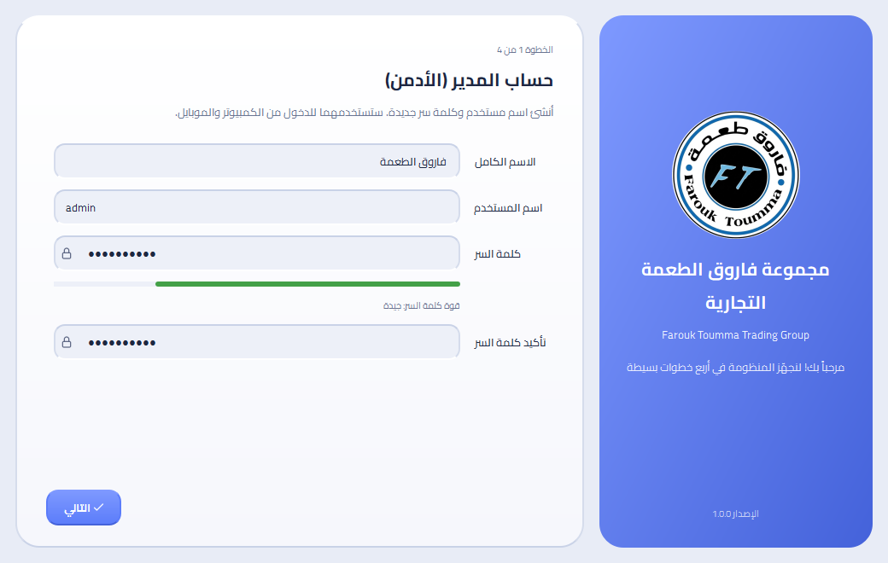
- الاسم الكامل: الاسم الذي يظهر أعلى البرنامج وعلى الفواتير كبائع.
- اسم المستخدم: بالأحرف الإنكليزية (مثل admin). تستخدمه للدخول من الكمبيوتر والموبايل.
- كلمة السر: 8 أحرف على الأقل وفيها أحرف وأرقام. تحت الحقل شريط قوة كلمة السر يتلوّن من الأحمر (ضعيفة جداً) إلى الأخضر (قوية) مع وصف مكتوب.
- تأكيد كلمة السر: أعد كتابتها نفسها.
- أيقونة القفل داخل حقل كلمة السر تُظهر/تُخفي الأحرف المكتوبة.
إذا كان هناك خطأ (مثل كلمتي سر غير متطابقتين) يظهر باللون الأحمر فوق الأزرار ولا ينتقل للخطوة التالية.
الخطوة 2: بيانات المنشأة والعملات
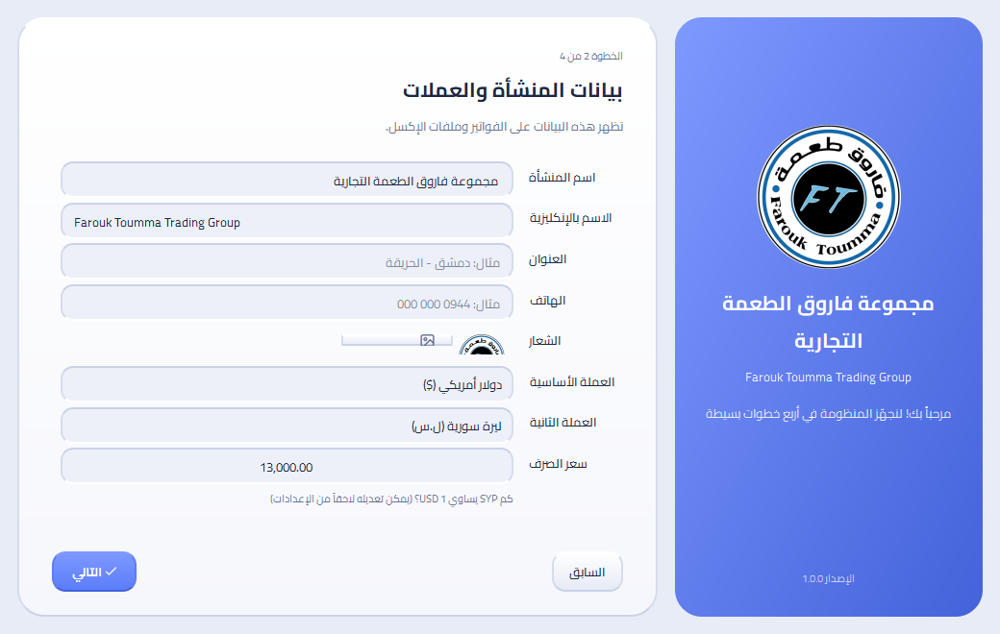
- اسم المنشأة (إجباري) والاسم بالإنكليزية: يظهران في رأس الفواتير وملفات Excel.
- العنوان والهاتف: يظهران على الفاتورة.
- الشعار: زر تغيير الشعار لاختيار صورة شعارك (PNG أو JPG). إن لم تختر يبقى الشعار الافتراضي.
- العملة الأساسية: العملة التي تُحفظ بها كل الأسعار (يُنصح بالدولار).
- العملة الثانية: (مثلاً الليرة السورية) أو «بدون عملة ثانية».
- سعر الصرف: كم من العملة الثانية يساوي 1 من الأساسية (مثلاً 1 دولار = 13000 ليرة). يمكن تعديله لاحقاً في أي وقت.
الخطوة 3: الذكاء الاصطناعي (اختياري)
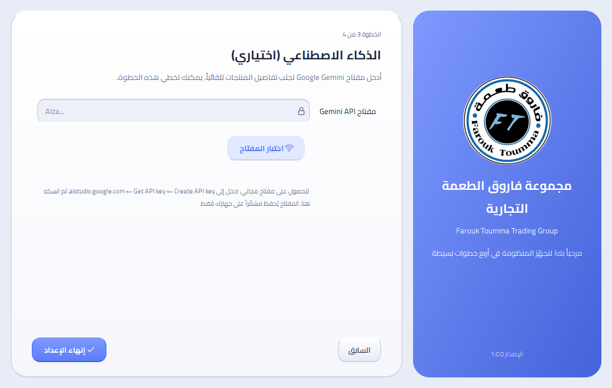
إذا أردت ميزات الذكاء الاصطناعي ضع مفتاح Gemini API (تحصل عليه مجاناً من موقع aistudio.google.com ← Get API key ← Create API key). زر اختبار المفتاح يتأكد أنه يعمل ويكتب «✓ المفتاح يعمل بنجاح» أو سبب الخطأ. يمكنك ترك الحقل فارغاً والضغط على إنهاء الإعداد، وإضافته لاحقاً من الإعدادات.
الخطوة 4: مفتاح الاسترجاع — مهم جداً
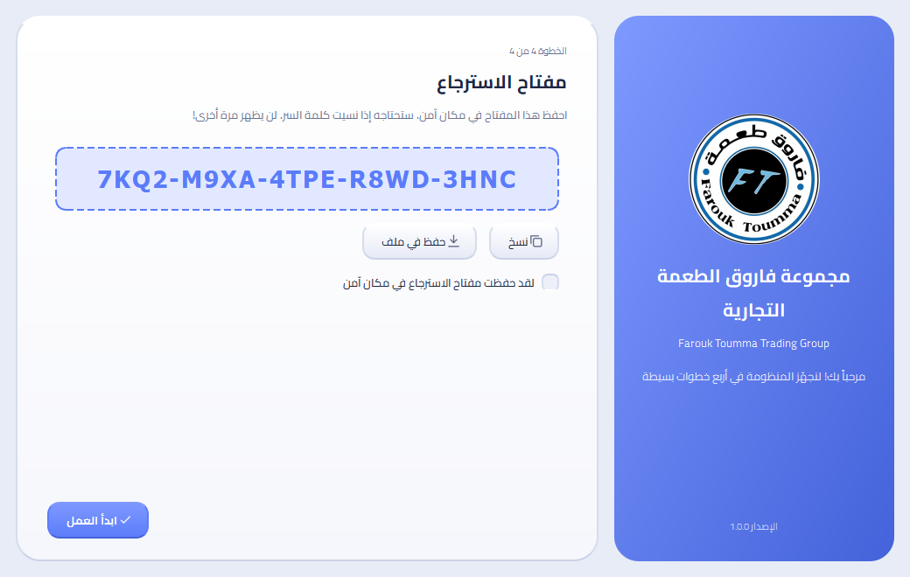
يظهر مفتاح مثل XXXX-XXXX-XXXX-XXXX-XXXX. هو الطريقة الوحيدة لاستعادة حساب الأدمن إذا نسيت كلمة السر.
- نسخ: ينسخ المفتاح للحافظة.
- حفظ في ملف: يحفظه في ملف نصي (احفظه على فلاشة أو اطبعه على ورقة).
- ضع إشارة على «لقد حفظت مفتاح الاسترجاع في مكان آمن» ثم اضغط ابدأ العمل. لا يمكن إغلاق هذه الخطوة قبل ذلك.
2.3 تسجيل الدخول
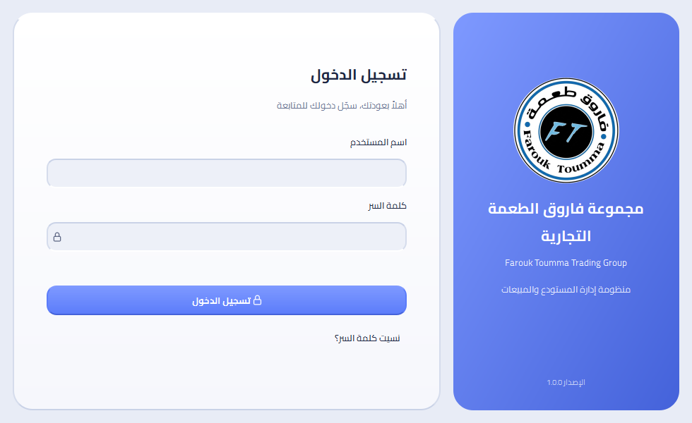
في كل مرة تفتح البرنامج تظهر هذه الشاشة: اكتب اسم المستخدم وكلمة السر ثم اضغط تسجيل الدخول (أو Enter). عند الخطأ تظهر رسالة حمراء. بعد عدة محاولات خاطئة متتالية يُقفل الحساب مؤقتاً للحماية.
- نسيت كلمة السر؟: يفتح نافذة استعادة حساب الأدمن.
2.4 استعادة حساب الأدمن
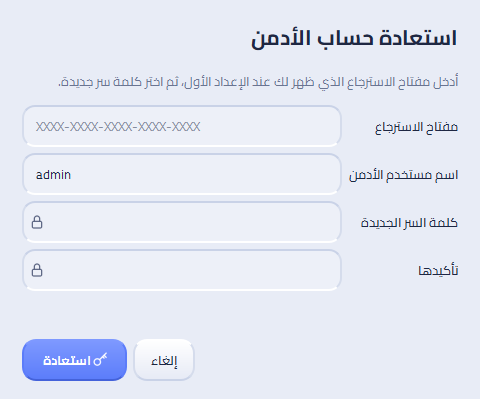
أدخل مفتاح الاسترجاع واسم مستخدم الأدمن ثم كلمة السر الجديدة وتأكيدها واضغط استعادة. بعد النجاح يظهر لك مفتاح استرجاع جديد (ويُنسخ تلقائياً) — احفظه لأن القديم يتوقف عن العمل.
2.5 قفل الشاشة
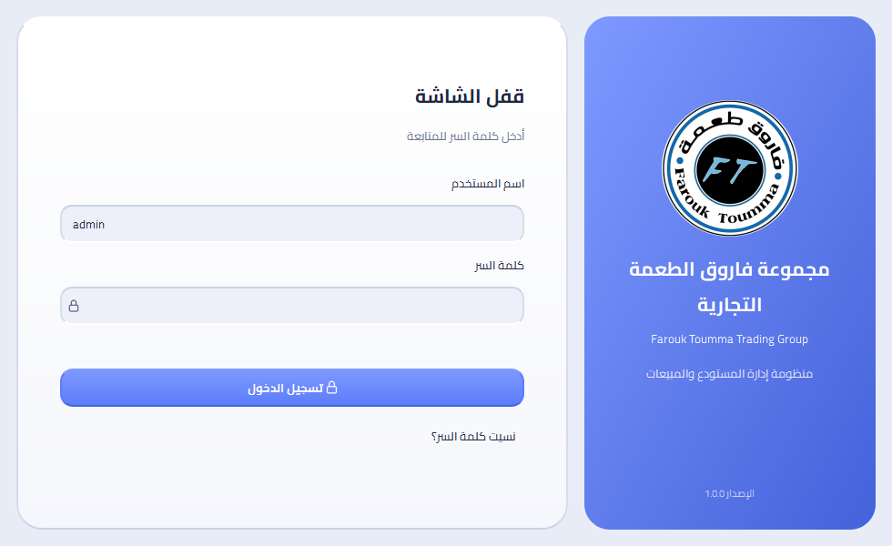
عند الضغط على Ctrl+L أو اختيار «قفل الشاشة» من قائمة المستخدم، أو بعد مدة خمول (الافتراضي 15 دقيقة، تُغيَّر من الإعدادات)، تختفي النافذة وتظهر شاشة القفل باسم المستخدم الحالي. تكتب كلمة السر فتعود لنفس المكان دون فقدان عملك. إذا أُلغيت الشاشة يتم تسجيل الخروج.
3. الواجهة العامة للبرنامج
بعد الدخول تظهر النافذة الرئيسية. البرنامج مقسوم إلى خمسة أقسام، وكل قسم فيه عدة صفحات:
| القسم | صفحاته |
|---|---|
| الرئيسية | لوحة التحكم • الإشعارات • المساعد الذكي |
| المبيعات | نقطة البيع • الفواتير • الزبائن |
| المخزون والمشتريات | المنتجات • الأقسام والخانات • المخزون • المشتريات |
| المالية والتقارير | المالية والورديات • التقارير |
| النظام | المستخدمون • الإعدادات |
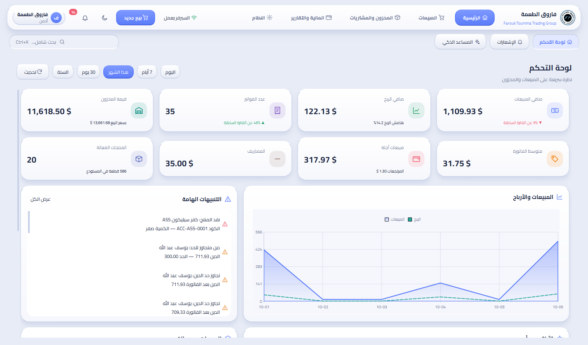
3.1 الشريط العلوي (من اليمين إلى اليسار)
| العنصر | الوظيفة |
|---|---|
| الشعار والاسم | شعار المنشأة واسم «مجموعة الطعمة التجارية» والاسم الإنكليزي (يظهر الاسم على الشاشات العريضة فقط). |
| أزرار الأقسام | الرئيسية، المبيعات، المخزون والمشتريات، المالية والتقارير، النظام. القسم الحالي ملوّن بالأزرق. الضغط على قسم يفتح آخر صفحة كنت عليها داخله. |
| حالة السيرفر | أيقونة واي فاي خضراء مع «السيرفر يعمل» = الموبايل يستطيع الاتصال. حمراء = «السيرفر متوقف». الضغط عليها يفتح نافذة ربط الموبايل (رمز QR). مرّر الماوس فوقها لترى العنوان (مثل 192.168.1.10:8765). |
| بيع جديد | زر أزرق يفتح نقطة البيع مباشرة (نفس F2). |
| القمر/الشمس | تبديل الوضع الليلي (داكن) والوضع الفاتح. يُحفظ اختيارك. |
| الجرس | يفتح صفحة الإشعارات. الرقم الأحمر فوقه = عدد الإشعارات غير المقروءة (يتحدث كل دقيقة). |
| بطاقة المستخدم | الحرف الأول من اسمك واسمك ودورك. الضغط عليها يفتح قائمة: قفل الشاشة (Ctrl+L) وتسجيل الخروج (بالأحمر) للرجوع لشاشة الدخول بمستخدم آخر. |
3.2 صف الصفحات والبحث الشامل
تحت الشريط العلوي يظهر صف أزرار صفحات القسم الحالي (مثلاً في «المبيعات»: نقطة البيع، الفواتير، الزبائن) والصفحة الحالية مميزة. إذا كان القسم فيه صفحة واحدة يظهر بدلها مسار مثل «النظام › الإعدادات».
على اليسار مربع «بحث شامل... Ctrl+K»: يفتح نافذة بحث سريعة:
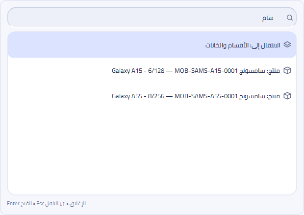
- اكتب اسم صفحة للانتقال إليها، أو حرفين أو أكثر للبحث عن منتج (بالاسم أو الكود)، فاتورة (بالرقم أو اسم الزبون)، أو زبون.
- تنقّل بالأسهم ↑↓، واضغط Enter للفتح أو Esc للإغلاق.
- اختيار منتج يفتح نافذة المنتج، واختيار فاتورة يفتح معاينتها، واختيار زبون يفتح كشف حسابه.
في أعلى كل صفحة: عنوان الصفحة ووصف صغير تحته، وعلى اليسار أزرار إجراءات الصفحة (مثل «منتج جديد»).
3.3 التعامل مع الجداول (في كل البرنامج)
- نقر مزدوج على أي سطر = فتحه أو تعديله.
- الزر الأيمن للماوس على سطر = قائمة إجراءات (تعديل، حذف، مرتجع، طباعة ملصق...). كل صفحة تشرح قائمتها في مكانها.
- الضغط على عنوان عمود = ترتيب الجدول حسبه (تصاعدي/تنازلي).
- الألوان: الأخضر = متوفر/مطابق/زيادة، البرتقالي = منخفض/تحذير، الأحمر = نافد/دين/عجز/ملغاة.
- زر تصدير الموجود في معظم الصفحات يحفظ الجدول المعروض كملف Excel منسّق ويفتحه.
- تحت كثير من الجداول سطر ملخص (عدد السجلات، الإجمالي...).
3.4 الرسائل
- رسالة منبثقة صغيرة (Toast) تظهر لثوانٍ: خضراء للنجاح، برتقالية للتنبيه، حمراء للخطأ.
- نافذة تأكيد قبل أي عملية حساسة (حذف، إلغاء فاتورة، تطبيق جرد...) — اقرأها قبل الموافقة.
- إذا كانت الشاشة صغيرة تظهر أشرطة تمرير بدل أن تختفي العناصر.
3.5 اختصارات لوحة المفاتيح
| الاختصار | الوظيفة |
|---|---|
| Ctrl+K | البحث الشامل |
| F2 | فتح نقطة البيع، وداخلها: الانتقال لمربع البحث/الباركود |
| F9 | إتمام البيع (داخل نقطة البيع) |
| Delete | حذف السطر المحدد من سلة البيع |
| Ctrl+N | منتج جديد |
| Ctrl+L | قفل الشاشة |
| Enter / Esc | تأكيد / إغلاق في معظم النوافذ |
3.6 الوضع الليلي
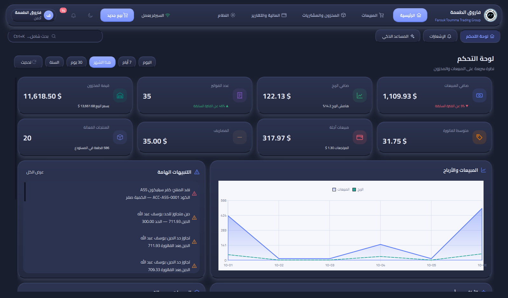
4. قسم «الرئيسية»
4.1 لوحة التحكم
أول صفحة تفتح بعد الدخول. تعطيك صورة سريعة عن المبيعات والمخزون.
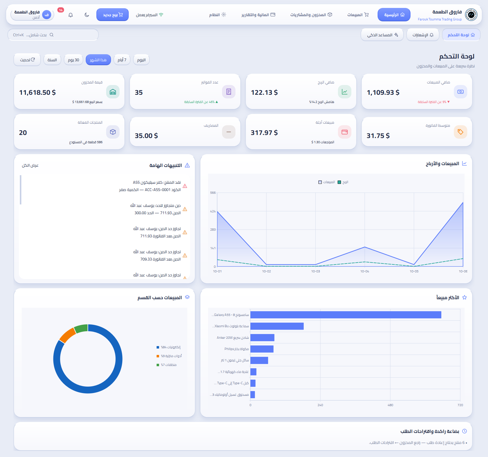
أزرار الفترة (أعلى اليسار)
اليوم 7 أيام هذا الشهر (الافتراضي) 30 يوم السنة: تحدد الفترة التي تُحسب عليها الأرقام. زر تحديث يعيد الحساب فوراً (اللوحة تتحدث تلقائياً أيضاً بعد كل بيع).
بطاقات المؤشرات الثمانية
| البطاقة | معناها |
|---|---|
| صافي المبيعات | مجموع المبيعات بعد طرح المرتجعات. تحتها نسبة التغير عن الفترة السابقة (▲ أخضر زيادة، ▼ أحمر نقصان). |
| صافي الربح | الربح بعد طرح التكلفة والمصاريف، وتحته «هامش الربح %». |
| عدد الفواتير | عدد فواتير البيع في الفترة مع نسبة التغير. |
| قيمة المخزون | قيمة البضاعة الموجودة بسعر التكلفة، وتحتها قيمتها بسعر البيع. |
| متوسط الفاتورة | صافي المبيعات ÷ عدد الفواتير. |
| مبيعات آجلة | ما بيع ديناً ولم يُقبض، وتحته قيمة المرتجعات إن وجدت. |
| المصاريف | مجموع المصاريف المسجلة في الفترة. |
| المنتجات الفعالة | عدد المنتجات المعروضة للبيع، وتحتها عدد القطع الموجودة في المستودع. |
البطاقات السفلية
- المبيعات والأرباح: رسم بياني يومي (الأزرق المبيعات، الأخضر المتقطع الربح). عند اختيار «اليوم» يعرض آخر 30 يوماً للمقارنة.
- التنبيهات الهامة: آخر التنبيهات (نفاد، نقص، ديون متجاوزة، صلاحية...). الضغط على تنبيه يفتح المنتج أو الزبون المعني مباشرة. زر عرض الكل يفتح صفحة الإشعارات.
- الأكثر مبيعاً: أعمدة أفقية لأعلى 8 منتجات بقيمة المبيعات.
- المبيعات حسب القسم: رسم دائري بحصة كل قسم بلونه.
- بضاعة راكدة واقتراحات الطلب: ملخص مكتوب: كم منتج لم يُبع منذ مدة وقيمتها، وكم منتج يحتاج إعادة طلب ومنها ما سينفد خلال أسبوع.
4.2 الإشعارات
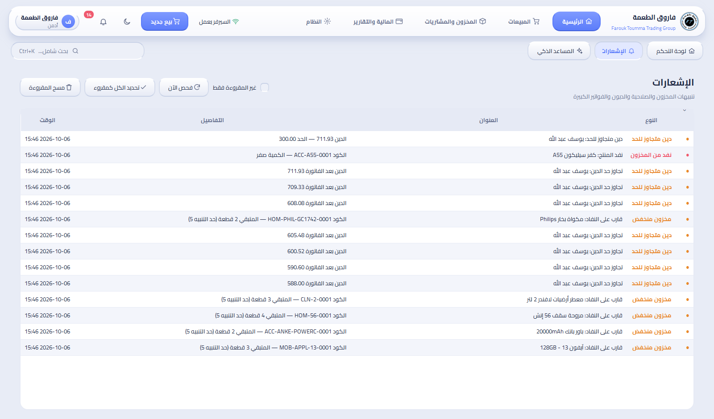
يجمع كل التنبيهات التي يولّدها النظام تلقائياً: مخزون منخفض، نفاد، قرب انتهاء صلاحية، منتهي الصلاحية، دين متجاوز للحد، فاتورة كبيرة، رسائل النظام، وتوفر تحديث.
| العنصر | الوظيفة |
|---|---|
| غير المقروءة فقط | مربع اختيار لإخفاء ما قرأته. |
| فحص الآن | يفحص كل المنتجات والزبائن فوراً ويولّد التنبيهات (يتم تلقائياً بشكل دوري). |
| تحديد الكل كمقروء | يزيل الرقم الأحمر عن الجرس. |
| مسح المقروءة | يحذف الإشعارات المقروءة من القائمة. |
| الجدول | النقطة الملونة ● = غير مقروء. الأعمدة: النوع (ملوّن حسب الخطورة)، العنوان، التفاصيل، الوقت. نقر مزدوج يعلّمه كمقروء ويفتح المنتج/الزبون/الفاتورة. |
عند حدوث تنبيه جديد أثناء العمل تظهر رسالة منبثقة صغيرة في أسفل النافذة.
4.3 المساعد الذكي
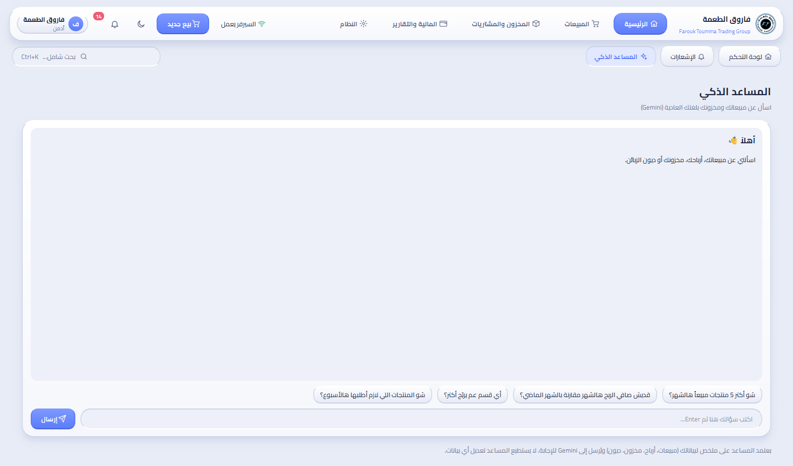
محادثة تسأل فيها عن مبيعاتك ومخزونك بلغتك العادية (يعتمد على Google Gemini ويحتاج مفتاحاً في الإعدادات واتصال إنترنت).
- أزرار الأسئلة الجاهزة تحت المحادثة (مثل «شو أكتر 5 منتجات مبيعاً هالشهر؟»): اضغط أي واحد ليُرسل مباشرة.
- مربع السؤال: اكتب سؤالك ثم Enter أو زر إرسال. يتعطل المربع حتى تصل الإجابة.
- المساعد يتذكر الأسئلة السابقة في نفس الجلسة، ولا يستطيع تعديل أي بيانات.
5. قسم «المبيعات»
5.1 نقطة البيع
شاشة البيع اليومية. تُفتح من زر بيع جديد أو F2. في أعلاها تذكير بالاختصارات: «F2 للبحث • F9 لإتمام البيع • Delete لحذف سطر».
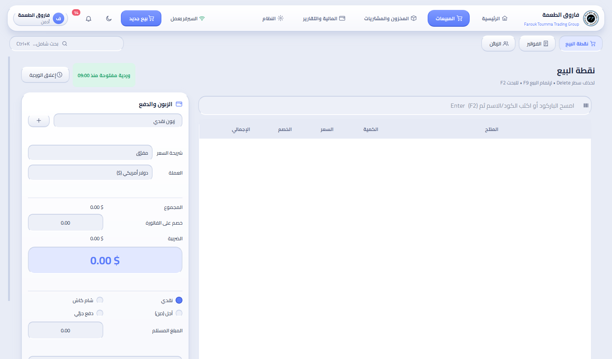
أ) الوردية (أعلى اليسار)
- شارة «وردية مفتوحة منذ 09:00» بالأخضر أو «لا توجد وردية مفتوحة» بالبرتقالي.
- فتح وردية: يسألك عن الرصيد النقدي الافتتاحي في الصندوق (الفراطة الموجودة في الدرج) ثم يفتح ورديتك.
- إغلاق الوردية: يفتح نافذة مطابقة الصندوق (انظر الصندوق والورديات).
ب) مربع البحث / الباركود
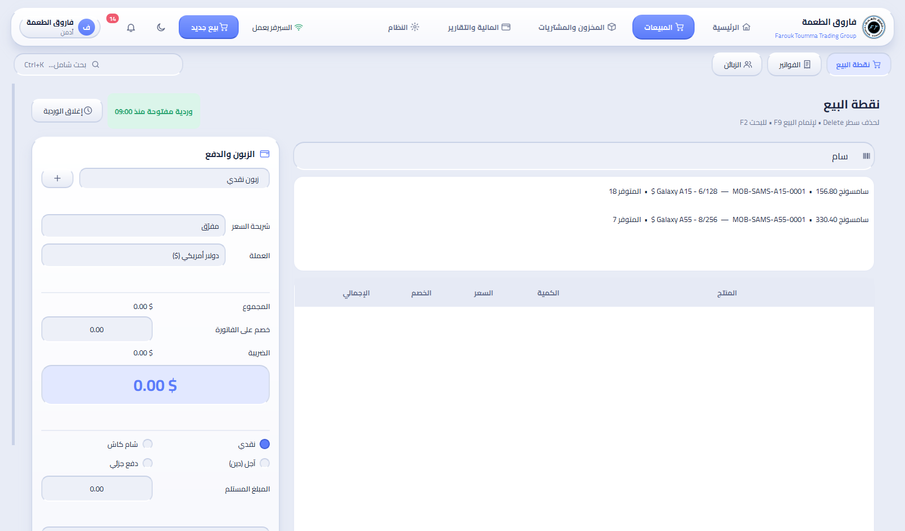
- امسح الباركود بالقارئ، أو اكتب الكود ثم Enter: يُضاف المنتج للسلة فوراً.
- اكتب حرفين أو أكثر من الاسم: تظهر قائمة اقتراحات فيها الاسم — الكود • السعر • المتوفر. المنتج النافد يظهر بالأحمر. اضغط على أي اقتراح لإضافته.
- إضافة كمية مباشرة: اكتب 3*الكود ثم Enter لإضافة 3 قطع دفعة واحدة.
- إضافة نفس المنتج مرة ثانية تزيد كميته بدل أن تكرر السطر.
- المنتج «الموقوف» لا يمكن بيعه وتظهر رسالة تنبيه.
ج) جدول السلة
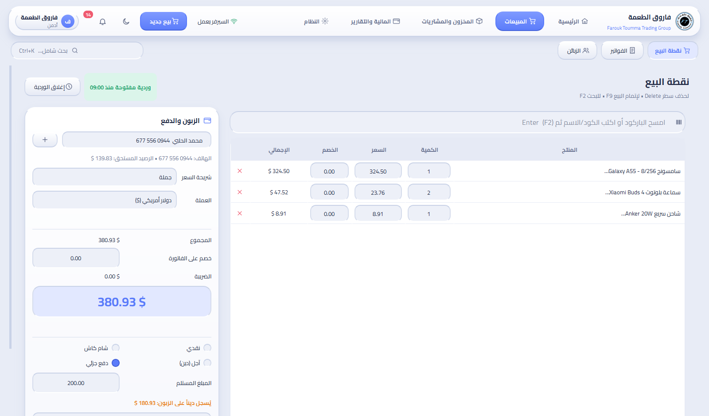
| العمود | الشرح |
|---|---|
| المنتج | الاسم والكود، وإذا عليه عرض يظهر 🏷 واسم العرض. إذا كانت الكمية المطلوبة أكبر من المتوفر يتلوّن بالأحمر (مرّر الماوس لترى المتوفر). |
| الكمية | عدّلها بالأسهم أو بالكتابة. المنتجات بالمتر/الكيلو/اللتر تقبل كسوراً. |
| السعر | سعر القطعة (تلقائي حسب الشريحة والعروض). يمكن تعديله فقط لمن يملك صلاحية «منح خصومات». |
| الخصم | مبلغ خصم على هذا السطر (بنفس الصلاحية). |
| الإجمالي | إجمالي السطر. |
| ✕ الأحمر | حذف السطر من السلة (أو حدّد السطر واضغط Delete). |
د) لوحة «الزبون والدفع»
- الزبون: قائمة قابلة للكتابة للبحث. الافتراضي «زبون نقدي». عند اختيار زبون يظهر تحته هاتفه والرصيد المستحق عليه، وتتغير شريحة السعر تلقائياً لشريحته.
- + بجانب الزبون: إضافة زبون جديد سريعاً (الاسم، الهاتف، شريحة السعر) ويُختار مباشرة.
- شريحة السعر: مفرّق / جملة / ... تغيّر الأسعار في السلة فوراً.
- العملة: اختر البيع بالدولار أو بالليرة. عند اختيار العملة الثانية يظهر سطر «سعر الصرف: 1 USD = ... ل.س» وزر القلم ✏ لتعديل سعر الصرف مباشرة من شاشة البيع (لمن يملك صلاحية الإعدادات)، ويُحفظ في سجل أسعار الصرف.
- المجموع، خصم على الفاتورة (مبلغ يُطرح من الكل)، الضريبة (إن كانت مفعّلة في الإعدادات).
- الإجمالي الكبير بالأزرق، وتحته المبلغ بالعملة الأساسية إذا كنت تبيع بعملة أخرى.
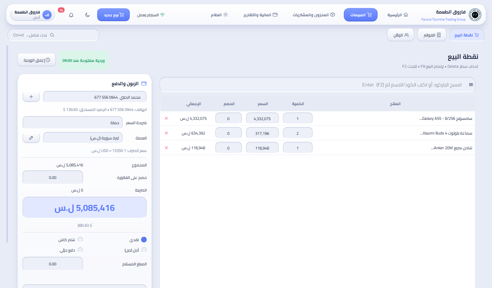
هـ) طرق الدفع
| الطريقة | ما يحدث |
|---|---|
| نقدي | اكتب «المبلغ المستلم» (اختياري) فيظهر بالأخضر «الباقي للزبون: ...»، أو بالأحمر إن كان المبلغ أقل من الإجمالي. |
| شام كاش | يُعتبر المبلغ مدفوعاً كاملاً عبر شام كاش ولا يدخل صندوق النقد. يظهر حقل «رقم عملية شام كاش (اختياري)» ويُكتب على الفاتورة. |
| آجل (دين) | كامل المبلغ يُسجل ديناً على الزبون (يجب اختيار زبون). يظهر بالبرتقالي «يُسجل ديناً على الزبون: ...». |
| دفع جزئي | اكتب المبلغ المدفوع، والباقي يُسجل ديناً على الزبون. |
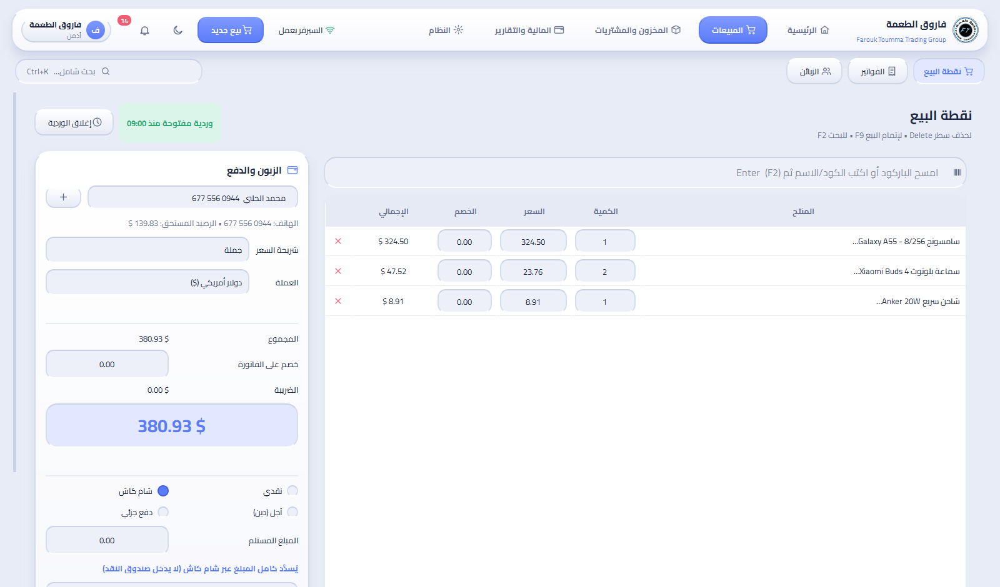
- ملاحظات على الفاتورة: نص يُطبع على الفاتورة.
- إتمام البيع (F9): يحفظ الفاتورة، يخصم الكمية من المخزون، يسجل الدين إن وجد، يفرغ السلة، ثم يفتح معاينة الفاتورة للطباعة أو الإرسال.
- عرض سعر: يحفظ السلة كـ«عرض سعر» (لا يخصم من المخزون ولا يسجل ديناً) ويفتح معاينته. يمكن تحويله لاحقاً إلى فاتورة.
- تفريغ السلة: يمسح كل شيء بعد التأكيد.
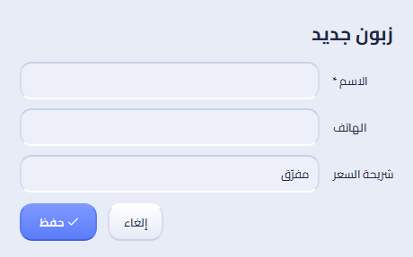
5.2 معاينة الفاتورة (طباعة، PDF، واتساب)
تفتح بعد كل بيع، أو من صفحة الفواتير. المعاينة قابلة للتعديل: اضغط على أي نص في الورقة لتعديله أو إضافة كتابة، وما تراه هو ما يُطبع ويُحفظ.
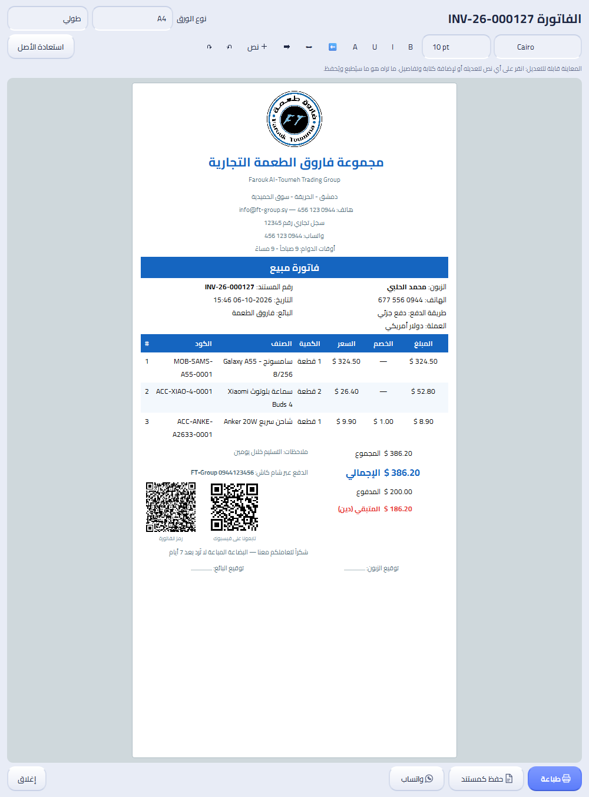
| العنصر | الوظيفة |
|---|---|
| نوع الورق | A3 / A4 / A5 / A6 / Letter / Legal / إيصال 80mm / إيصال 58mm. تغييره يعيد بناء الفاتورة (ويسألك إن كنت عدّلت شيئاً). |
| طولي / عرضي | اتجاه الورقة (معطّل في الإيصالات الحرارية). |
| الخط وحجمه | لتغيير خط النص المحدد وحجمه. |
| B / I / U / A | عريض، مائل، تسطير، لون النص. |
| أزرار المحاذاة | يسار، توسيط، يمين. |
| «+ نص» | يضيف نصاً أو تفاصيل في مكان المؤشر. |
| ↶ / ↷ | تراجع / إعادة. |
| استعادة الأصل | يتخلى عن كل التعديلات ويعيد الفاتورة الأصلية. |
| طباعة | يفتح نافذة اختيار الطابعة ويطبع بالمقاس المختار. |
| حفظ كمستند | حفظ كـ PDF، أو مستند Word/LibreOffice (.odt)، أو صفحة ويب (.html). الافتراضي في مجلد الفواتير، ثم يفتح المجلد. |
| واتساب | ينشئ PDF للفاتورة، ويفتح واتساب على رقم الزبون (الأرقام السورية 09… تتحول تلقائياً لـ 963…) برسالة جاهزة فيها رقم الفاتورة والإجمالي، ويفتح مجلد الملف — اسحب ملف PDF إلى المحادثة لإرفاقه. |
| إغلاق | إغلاق المعاينة. |
أسفل الفاتورة: عبارة الشكر، حساب شام كاش، ورمز QR لصفحة الفيسبوك (كلها من الإعدادات).
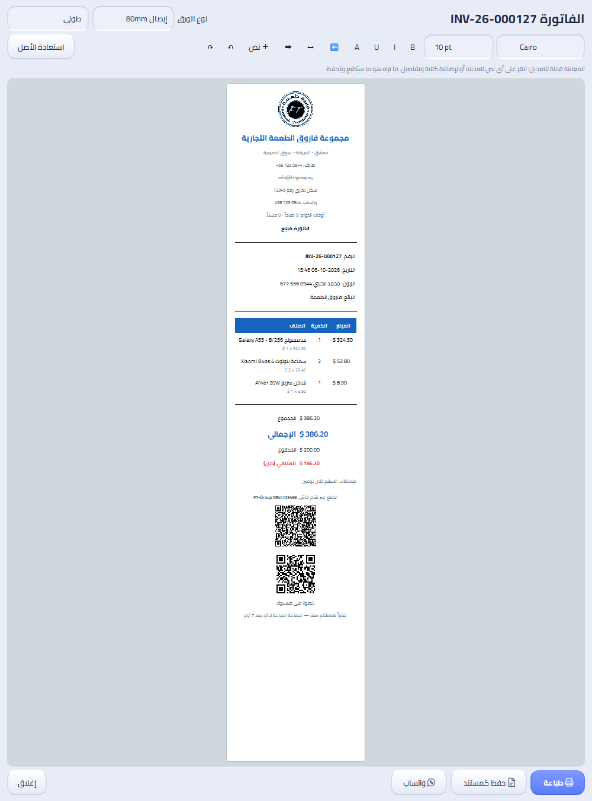
5.3 الفواتير
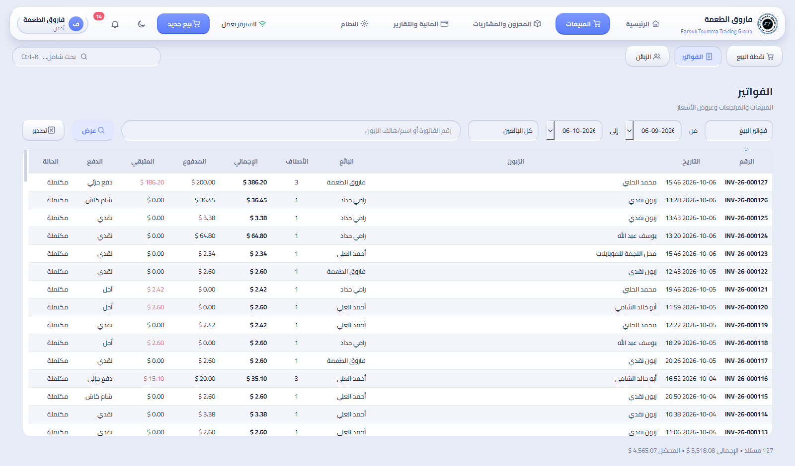
شريط الفلترة
- النوع: فواتير البيع / المرتجعات / عروض الأسعار.
- من … إلى: الفترة (الافتراضي آخر 30 يوماً).
- البائع: «كل البائعين» أو بائع محدد. من لا يملك صلاحية «رؤية فواتير كل البائعين» يرى فواتيره فقط.
- مربع البحث: رقم الفاتورة أو اسم/هاتف الزبون ثم Enter.
- عرض لتطبيق الفلترة، تصدير إلى Excel.
الجدول
الأعمدة: الرقم، التاريخ، الزبون، البائع، عدد الأصناف، الإجمالي، المدفوع، المتبقي (أحمر إن كان هناك دين)، طريقة الدفع، الحالة (مكتملة / ملغاة / محوّل لفاتورة / مفتوح). تحت الجدول: عدد المستندات والإجمالي والمحصّل.
قائمة الزر الأيمن
| الإجراء | الشرح |
|---|---|
| عرض / طباعة | يفتح معاينة الفاتورة (أو بنقر مزدوج). |
| مرتجع | من فاتورة بيع فقط — يفتح نافذة المرتجع (أدناه). |
| إلغاء الفاتورة | يسأل عن السبب ثم يؤكد: الإلغاء يعيد البضاعة للمخزون ويلغي الدين، وتبقى الفاتورة ظاهرة بحالة «ملغاة». |
| تحويل عرض السعر إلى فاتورة | لعرض سعر مفتوح: ينشئ فاتورة بيع منه ويفتحها. |
نافذة المرتجع
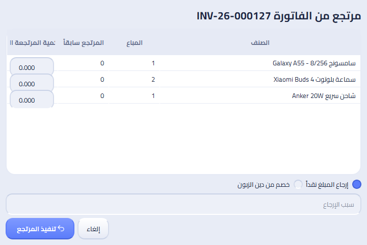
تعرض أصناف الفاتورة: المباع، المرتجع سابقاً، والكمية المرتجعة الآن (لا يمكن تجاوز المتبقي). اختر إرجاع المبلغ نقداً أو خصم من دين الزبون (متاح إذا كانت الفاتورة باسم زبون)، واكتب سبب الإرجاع، ثم تنفيذ المرتجع. تعود البضاعة للمخزون وتُنشأ وثيقة مرتجع برقم خاص وتفتح معاينتها.
5.4 الزبائن
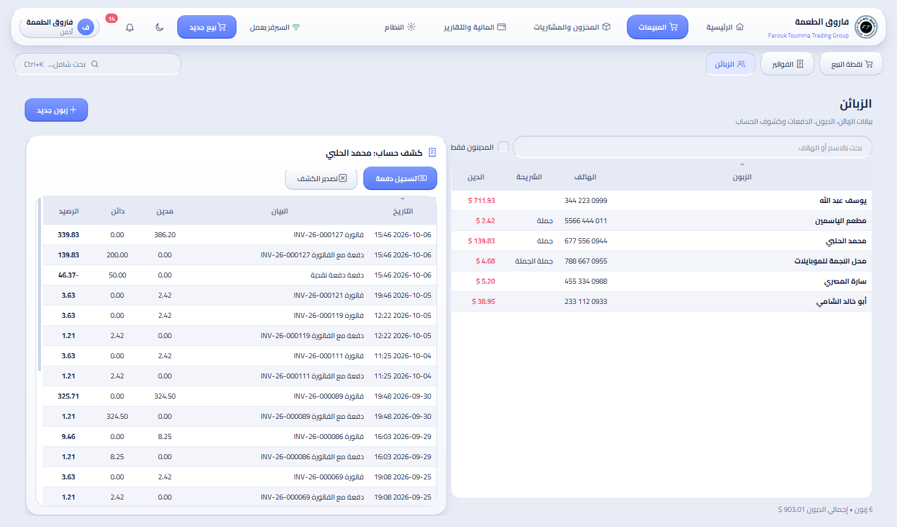
- زبون جديد (أعلى اليسار): يفتح نافذة الزبون.
- بحث بالاسم أو الهاتف والمدينون فقط لعرض أصحاب الديون.
- الجدول: الزبون، الهاتف، الشريحة، الدين بالأحمر. تحته عدد الزبائن وإجمالي الديون. نقر مزدوج = تعديل. الزر الأيمن: تعديل / حذف.
- تحديد زبون يعرض كشف حسابه على اليسار: التاريخ، البيان (فاتورة/دفعة/مرتجع)، مدين، دائن، الرصيد بعد كل حركة.
- تسجيل دفعة: استلام مبلغ من الزبون (يُقترح المبلغ = كامل الدين) واختيار الطريقة نقدي أو شام كاش.
- تصدير الكشف: حفظ كشف الحساب Excel لإرساله للزبون.
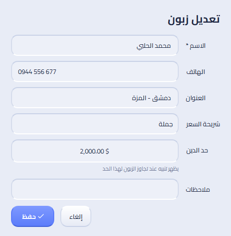
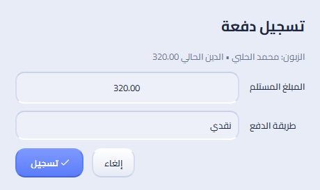
حقول نافذة الزبون: الاسم (إجباري)، الهاتف، العنوان، شريحة السعر (تُطبق تلقائياً عند البيع له)، حد الدين (عند تجاوزه يظهر تنبيه؛ «بدون حد» = لا تنبيه)، ملاحظات. حذف زبون عليه فواتير قد يُرفض حفاظاً على السجلات.
6. قسم «المخزون والمشتريات»
6.1 المنتجات
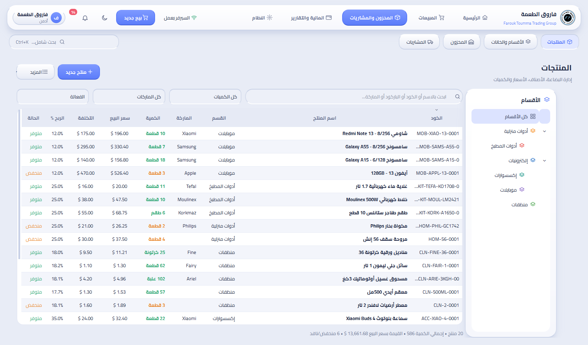
العناصر
- شجرة الأقسام (يمين): «كل الأقسام» ثم الأقسام وفروعها بألوانها. اختيار قسم يعرض منتجاته (ومنتجات فروعه).
- مربع البحث: بالاسم أو الكود أو الباركود أو الماركة (النتائج تتحدث أثناء الكتابة). علامة ✕ داخل المربع تمسحه.
- فلتر الكمية: كل الكميات / منخفض المخزون / نافد / متوفر.
- فلتر الماركة: كل الماركات أو ماركة محددة.
- فلتر الحالة: الفعالة / الموقوفة / الكل.
- الجدول: الكود، اسم المنتج، القسم، الماركة، الكمية (ملوّنة حسب الحالة)، سعر البيع، التكلفة، الربح %، الحالة (متوفر/منخفض/نافد/موقوف). يمكن تحديد عدة أسطر بـ Ctrl أو Shift.
- سطر الملخص: عدد المنتجات، إجمالي الكمية، قيمتها بسعر البيع، وعدد المنخفض/النافد.
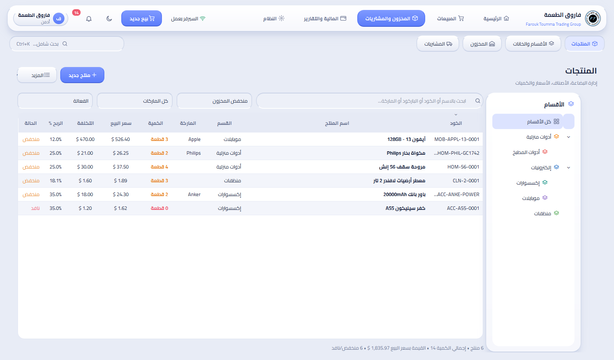
أزرار أعلى الصفحة
منتج جديد (Ctrl+N) يفتح نافذة المنتج فارغة (بالقسم المحدد في الشجرة). زر المزيد يفتح قائمة:
| البند | الشرح |
|---|---|
| استيراد من Excel | إدخال منتجات كثيرة دفعة واحدة من ملف (انظر 6.1.4). |
| تصدير جرد البضاعة (مجلد Excel) | ملف جرد منسق: ورقة ملخص + ورقة لكل قسم. |
| تصدير الجدول الحالي | ما يظهر في الجدول الآن (بعد الفلترة) إلى Excel. |
| تحديث الأسعار الجماعي | رفع/خفض أسعار مجموعة منتجات بنسبة مئوية. |
| عرض/خصم على المنتج المحدد | إنشاء عرض مؤقت للمنتج المحدد. |
| طباعة ملصقات للمحدد | ملصقات باركود للمنتجات المحددة. |
| إنشاء متغيرات (ألوان/مقاسات) | توليد منتجات فرعية من المنتج المحدد. |
قائمة الزر الأيمن على منتج
فتح / تعديل • تعديل الكمية (إضافة/إخراج/تالف/تعيين) • نسخ كمنتج جديد (يفتح منتجاً جديداً بنفس القسم واسم «(نسخة)») • طباعة ملصق • حذف (إذا كان للمنتج مبيعات سابقة يتم إيقافه بدل حذفه حفاظاً على الفواتير).
6.1.1 نافذة المنتج (إضافة / تعديل)
في أعلاها عنوان «تعديل: اسم المنتج» وشارة الكمية الحالية (خضراء/برتقالية/حمراء). وفيها ستة تبويبات:
التبويب 1: البيانات الأساسية
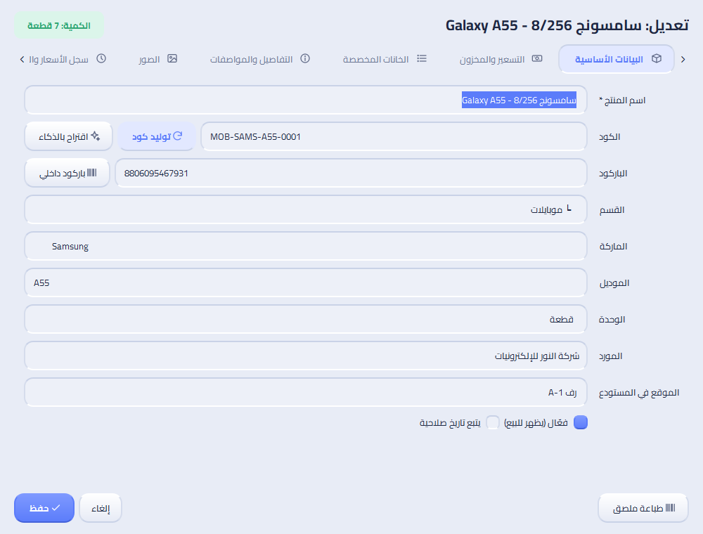
| الحقل | الشرح |
|---|---|
| اسم المنتج * | إجباري. مثال: سماعة بلوتوث Xiaomi Buds 4. |
| الكود | اتركه فارغاً ليُولّد تلقائياً من رمز القسم والماركة والموديل ورقم تسلسلي (مثل ACC-XIAO-4-0001). توليد كود يولّده الآن، واقتراح بالذكاء يطلب كوداً من Gemini. |
| الباركود | امسحه بالقارئ، أو باركود داخلي لتوليد باركود للمنتجات التي ليس عليها باركود (ثم اطبع له ملصقاً). |
| القسم | تغيير القسم يغيّر نسبة الربح الموروثة والخانات المخصصة الظاهرة. |
| الماركة / الموديل | الماركة قائمة قابلة للكتابة تتذكر الماركات السابقة. |
| الوحدة | قطعة، علبة، كرتونة، دزينة، متر، كيلو، لتر، طقم، رول، زوج (أو اكتب وحدة جديدة). |
| المورد | المورد المعتاد (يظهر في اقتراحات الطلب). |
| الموقع في المستودع | مثل «رف A-3» لتسهيل إيجاد البضاعة. |
| فعّال (يظهر للبيع) | إلغاؤه يوقف المنتج عن البيع دون حذفه. |
| يتبع تاريخ صلاحية | للمواد الغذائية والمنظفات: يطلب تاريخ انتهاء عند الإدخال ويخصم البيع من الأقرب انتهاءً. |
التبويب 2: التسعير والمخزون
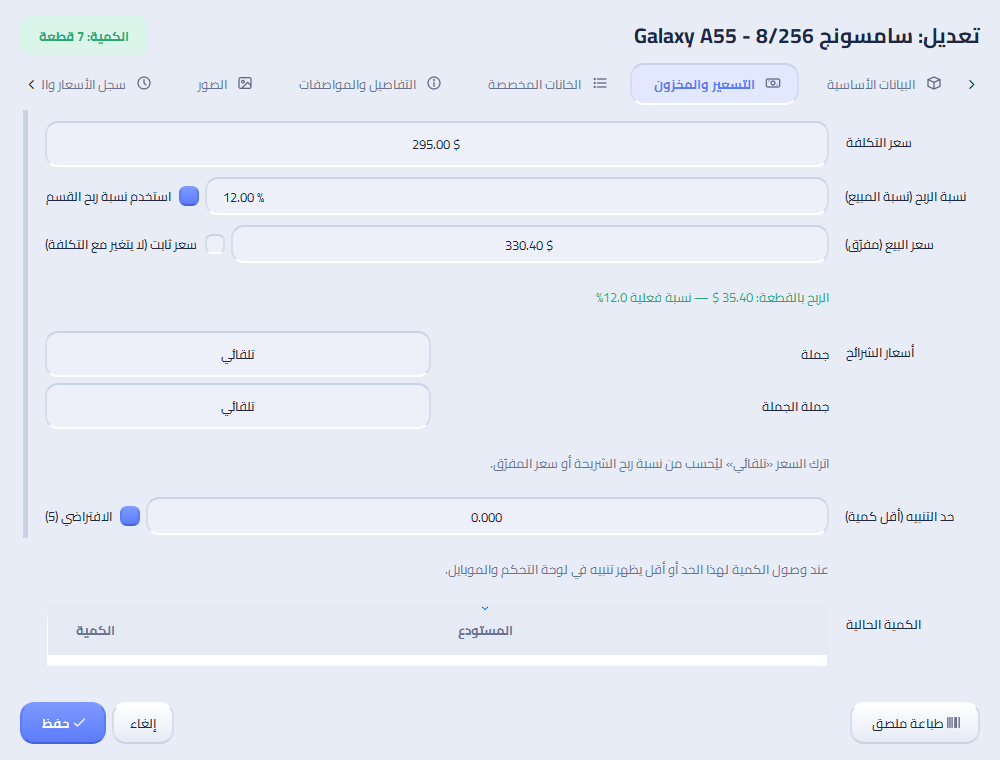
- سعر التكلفة ونسبة الربح: سعر البيع يُحسب تلقائياً = التكلفة + النسبة. مربع «استخدم نسبة ربح القسم» يأخذ النسبة من القسم.
- سعر البيع (مفرّق): محسوب تلقائياً. إذا أردت كتابته بنفسك فعّل «سعر ثابت (لا يتغير مع التكلفة)».
- سطر أخضر يبيّن الربح بالقطعة والنسبة الفعلية (أحمر إن كان خسارة).
- أسعار الشرائح: سعر خاص لكل شريحة (جملة...). «تلقائي» = يُحسب من نسبة ربح الشريحة أو سعر المفرّق.
- حد التنبيه (أقل كمية): عند الوصول له أو أقل يظهر تنبيه. مربع «الافتراضي» يأخذ القيمة العامة من الإعدادات.
- للمنتج الجديد: الكمية الافتتاحية، والمستودع (إن وجد أكثر من واحد)، وتاريخ الصلاحية إن كان يتبع صلاحية.
- للمنتج الموجود: جدول الكمية الحالية في كل مستودع وزر تعديل الكمية.
التبويب 3: الخانات المخصصة — الخانات التي أضفتها (بلد المنشأ، الضمان، اللون...). الخانة المعلّمة 🔒 مخفية عن المستخدمين العاديين، والمعلّمة * إجبارية. زر إضافة خانة لإنشاء خانة جديدة من هنا مباشرة.
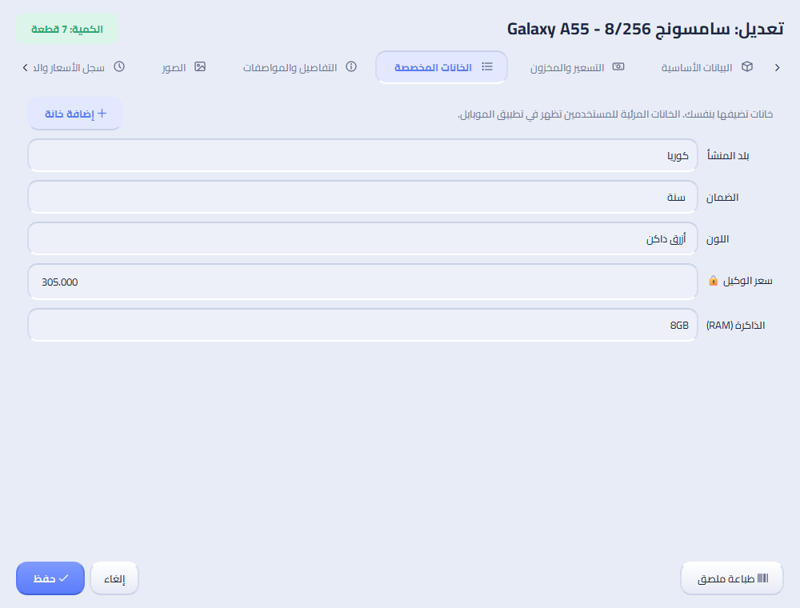
التبويب 4: التفاصيل والمواصفات — وصف المنتج، جدول مواصفات (المواصفة / القيمة) مع إضافة مواصفة وحذف المحدد، وملاحظات داخلية. زر جلب التفاصيل بالذكاء الاصطناعي يبحث عن المنتج بالاسم والماركة والموديل ويعرض النتيجة للمراجعة.
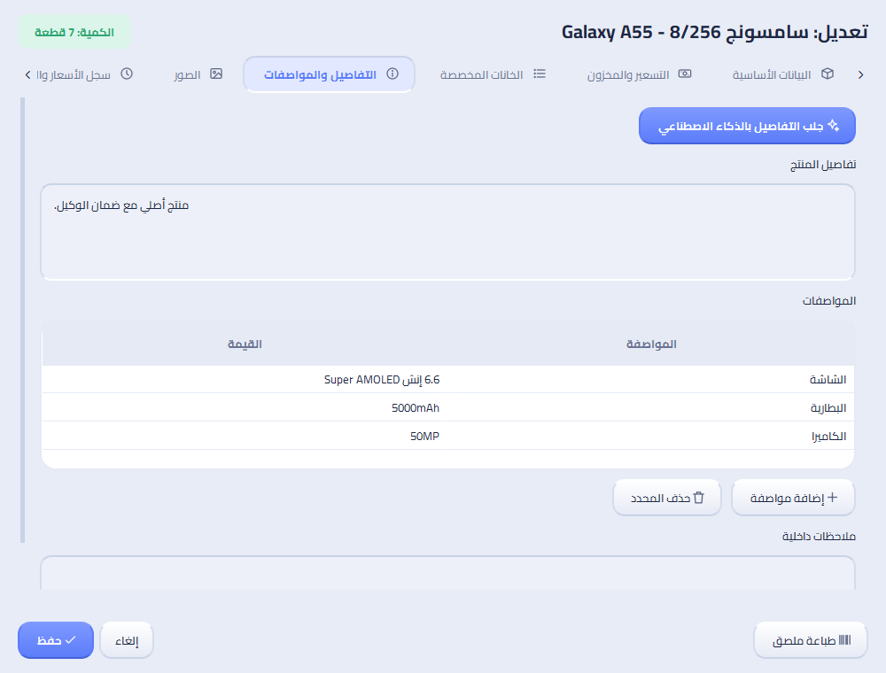
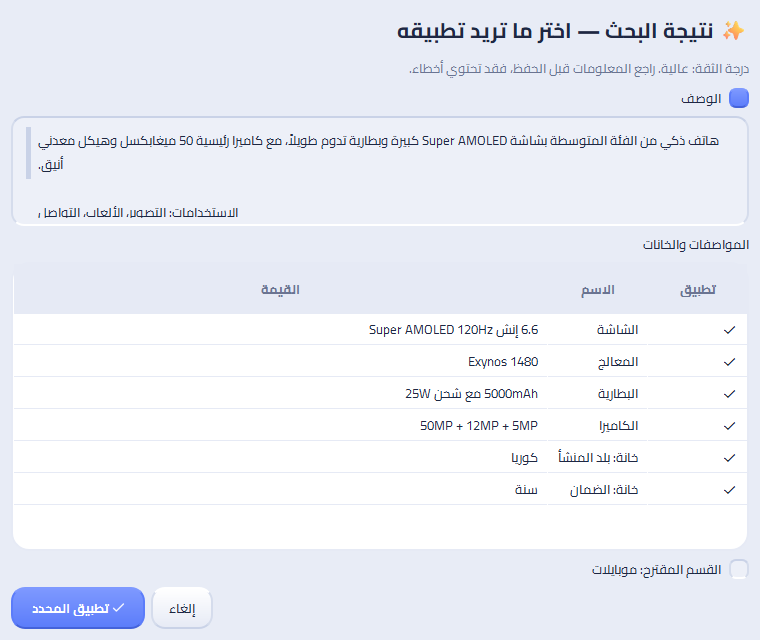
في نافذة النتيجة: درجة الثقة، الوصف (قابل للتعديل)، جدول المواصفات والخانات مع مربع «تطبيق» لكل سطر، والقسم المقترح. اضغط تطبيق المحدد ثم راجع واحفظ المنتج.
التبويب 5: الصور — إضافة صورة (يمكن عدة صور)، تعرّف على المنتج من صورة (يملأ الاسم والماركة والموديل والباركود والوصف تلقائياً من صورة المنتج)، حذف المحددة. الصور تظهر في الموبايل أيضاً.
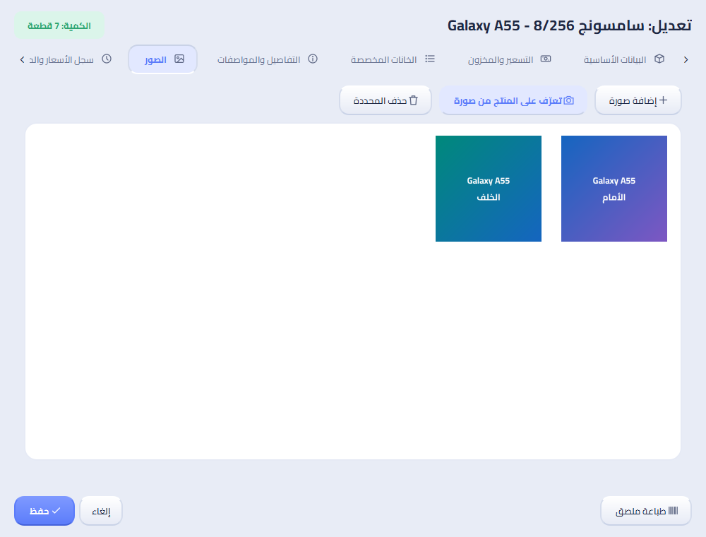
التبويب 6: سجل الأسعار والحركات (للمنتج الموجود فقط) — كل تغيير في السعر والتكلفة مع التاريخ والسبب، رسم بياني لتطور السعر، وآخر حركات المخزون (بيع، شراء، تعديل...).
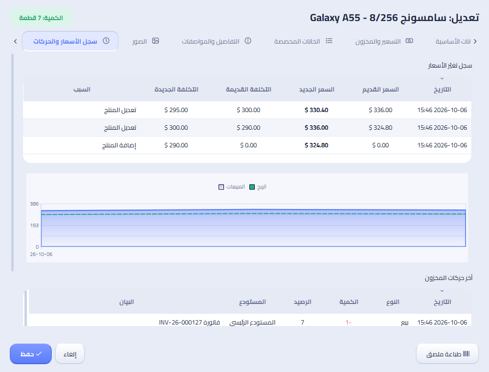
أزرار أسفل النافذة: طباعة ملصق (للمنتج الموجود)، إلغاء، حفظ وإضافة آخر (للمنتج الجديد: يحفظ ويفتح نافذة جديدة بنفس القسم — ممتاز لإدخال بضاعة كثيرة)، حفظ. الأخطاء تظهر بالأحمر فوق الأزرار.
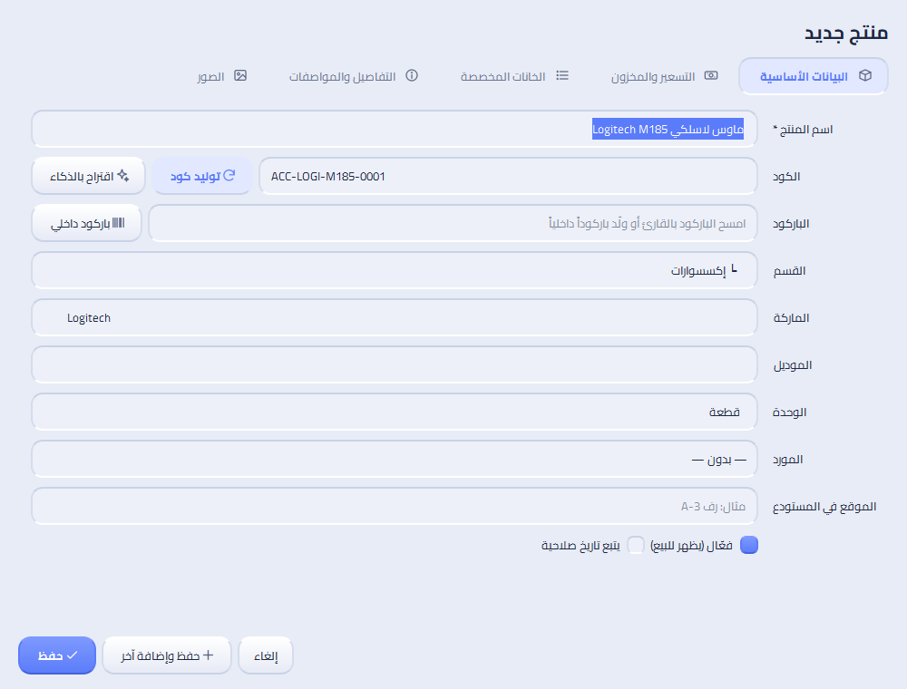
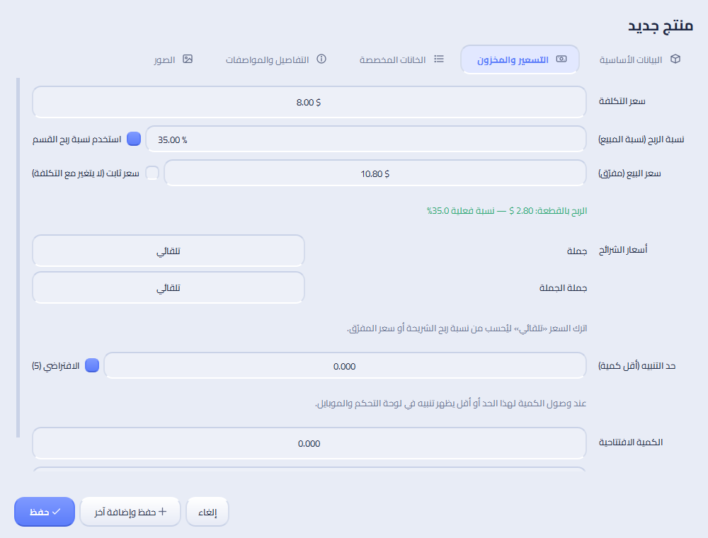
6.1.2 تحديث الأسعار الجماعي
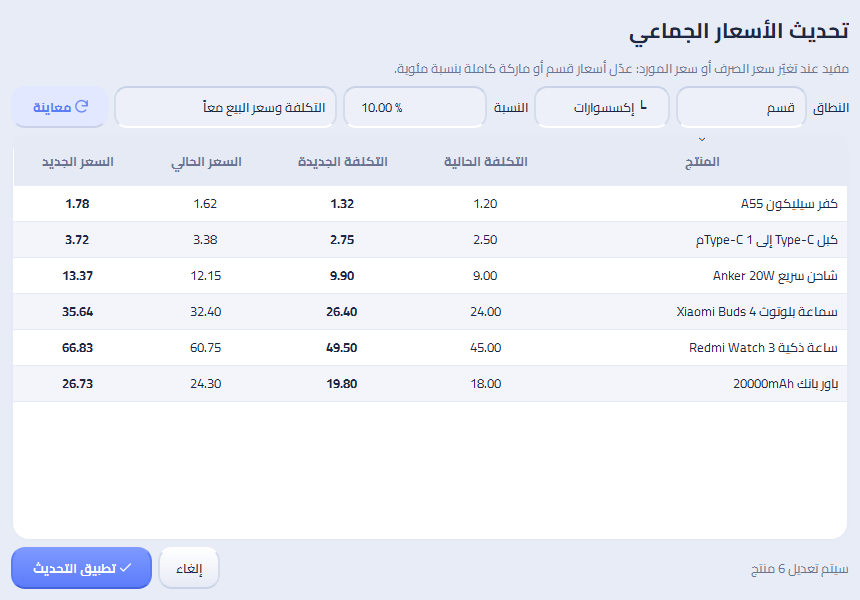
- النطاق: المنتجات المحددة / قسم / ماركة / مورد / كل المنتجات، ثم اختر القسم أو الماركة أو المورد.
- النسبة: موجبة للرفع (مثل 10%) أو سالبة للتخفيض (مثل -5%).
- ماذا يتغير: التكلفة وسعر البيع معاً / سعر البيع فقط / التكلفة فقط (والسعر يتبع نسبة الربح).
- معاينة تعرض التكلفة والسعر الحاليين والجديدين لكل منتج وعددها.
- تطبيق التحديث بعد التأكيد. كل تغيير يُسجل في سجل أسعار المنتج.
6.1.3 الملصقات، المتغيرات، والعروض
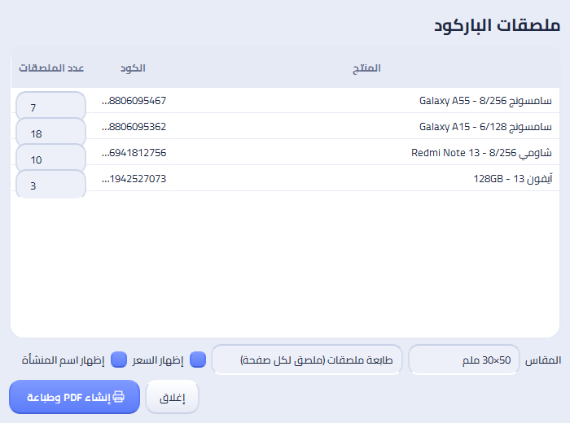
الملصقات: لكل منتج حدّد عدد الملصقات، ثم المقاس (50×30، 40×25، 60×40، 38×25، 70×50 ملم)، ونوع الورق (طابعة ملصقات: ملصق لكل صفحة، أو ورقة A4 شبكة)، و«إظهار السعر» و«إظهار اسم المنشأة». إنشاء PDF وطباعة يفتح ملف PDF جاهزاً للطباعة.
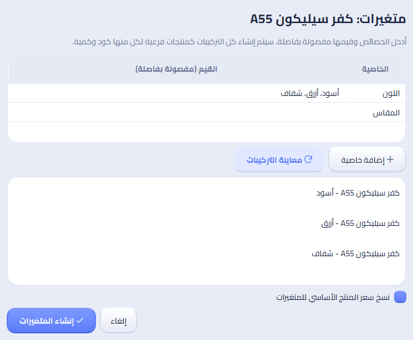
المتغيرات: اكتب الخاصية (اللون، المقاس...) وقيمها مفصولة بفاصلة. إضافة خاصية لسطر جديد، معاينة التركيبات تعرض كل الاحتمالات (مثلاً لونان × 3 مقاسات = 6 منتجات). «نسخ سعر المنتج الأساسي للمتغيرات» ثم إنشاء المتغيرات. كل متغير يصبح منتجاً له كود وكمية خاصة.
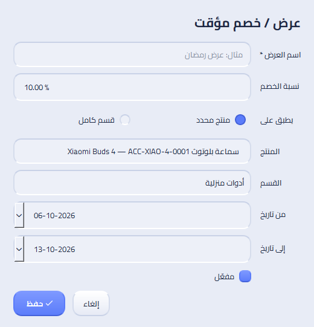
العرض: اسم العرض، نسبة الخصم، يطبق على منتج محدد أو قسم كامل، من تاريخ وإلى تاريخ، و«مفعّل». خلال فترة العرض يُخصم تلقائياً في البيع ويظهر 🏷 في السلة.
6.1.4 الاستيراد والتصدير مع Excel
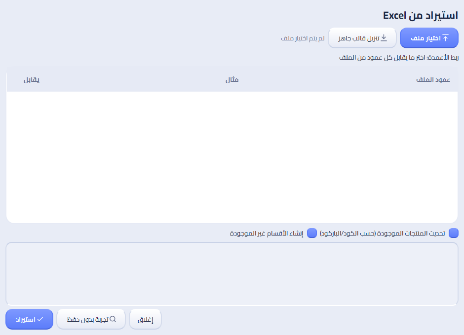
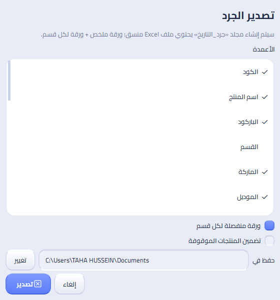
الاستيراد:
- تنزيل قالب جاهز إن لم يكن لديك ملف (أو استخدم ملفك).
- اختيار ملف: يقرأ الأعمدة ويعرض عدد الصفوف.
- جدول ربط الأعمدة: لكل عمود من الملف مثال من بياناته، واختر ما يقابله (الاسم، الكود، السعر، الكمية، القسم، خانة مخصصة...) أو «تجاهل». البرنامج يحاول الربط تلقائياً.
- الخيارات: تحديث المنتجات الموجودة (حسب الكود/الباركود) وإنشاء الأقسام غير الموجودة.
- تجربة بدون حفظ لترى النتيجة والأخطاء (رقم الصف وسببه) دون تغيير شيء، ثم استيراد.
تصدير الجرد: اختر الأعمدة بالمربعات، «ورقة منفصلة لكل قسم»، «تضمين المنتجات الموقوفة»، ومكان الحفظ ثم تصدير. ينشئ مجلد «جرد_التاريخ» فيه ملف Excel منسق ويفتحه.
6.2 الأقسام والخانات
صفحة فيها خمسة تبويبات:
تبويب «الأقسام»
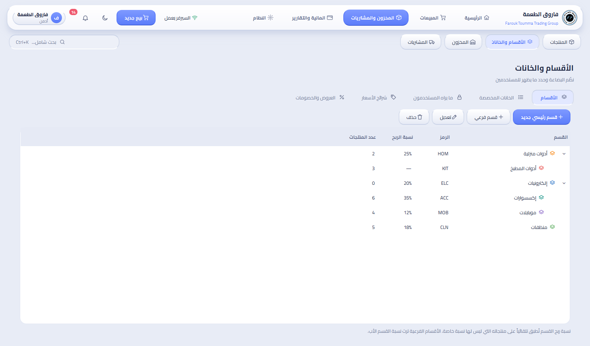
الأزرار: قسم رئيسي جديد، قسم فرعي (تحت القسم المحدد)، تعديل (أو نقر مزدوج)، حذف. نسبة ربح القسم تُطبق تلقائياً على منتجاته التي ليس لها نسبة خاصة، والأقسام الفرعية ترث نسبة الأب.
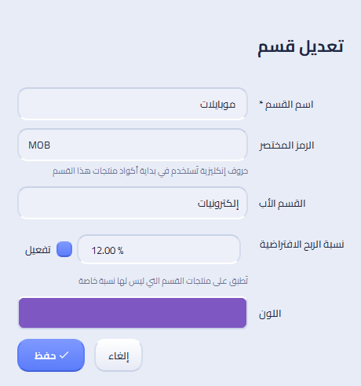
حقول القسم: الاسم، الرمز المختصر (حروف إنكليزية مثل ELC تبدأ بها أكواد منتجاته)، القسم الأب، نسبة الربح الافتراضية (مع مربع «تفعيل»)، واللون (يظهر في الشجرة والرسوم). تعديل النسبة يعيد حساب أسعار منتجات القسم.
تبويب «الخانات المخصصة»
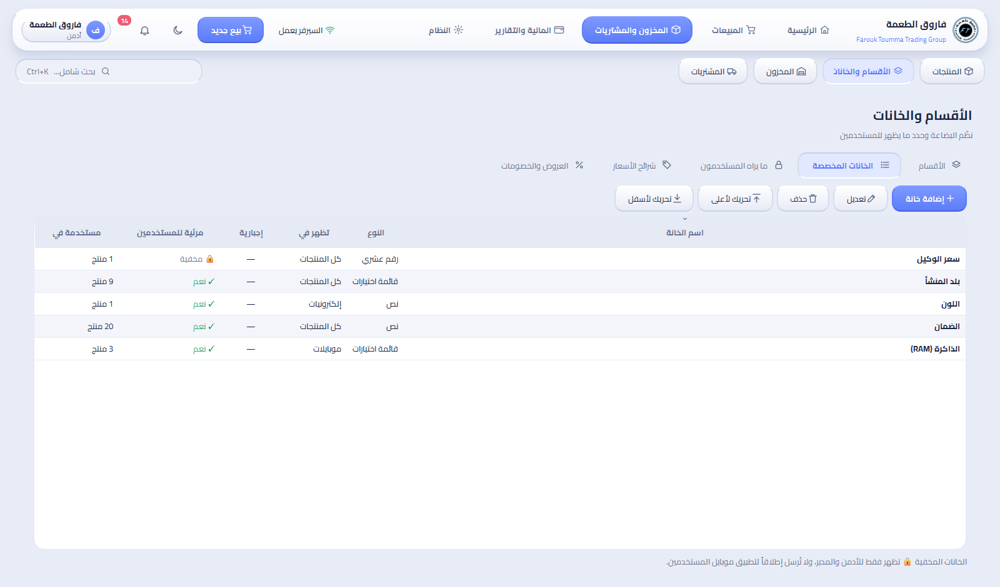
الأزرار: إضافة خانة، تعديل، حذف (يحذف قيمها من كل المنتجات)، تحريك لأعلى وتحريك لأسفل (ترتيب ظهورها). الأعمدة: الاسم، النوع، تظهر في (كل المنتجات أو قسم)، إجبارية، مرئية للمستخدمين (✓ نعم / 🔒 مخفية)، ومستخدمة في كم منتج. الزر الأيمن: «تبديل الظهور للمستخدمين».
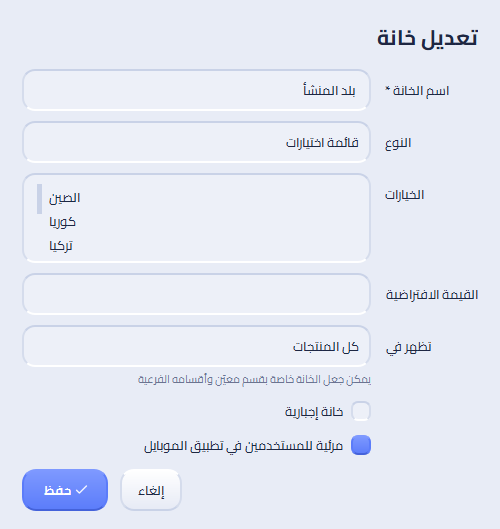
أنواع الخانات: نص، رقم صحيح، رقم عشري، تاريخ، نعم/لا، قائمة اختيارات (اكتب خياراً في كل سطر)، رابط، صورة. ويمكن تحديد قيمة افتراضية، وجعلها خاصة بقسم معيّن، وإجبارية، ومرئية في الموبايل أو لا.
تبويب «ما يراه المستخدمون»
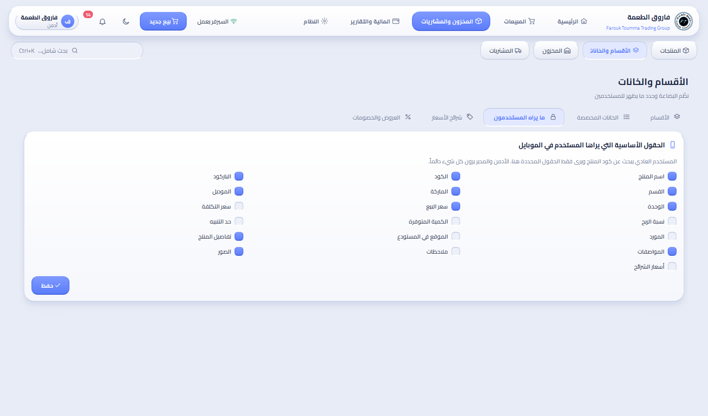
ضع إشارة على كل حقل أساسي تريد أن يراه المستخدم العادي (السعر، الكمية، الماركة، الصور...) ثم حفظ. الاسم والكود يظهران دائماً. الأدمن والمدير يرون كل شيء.
تبويب «شرائح الأسعار»
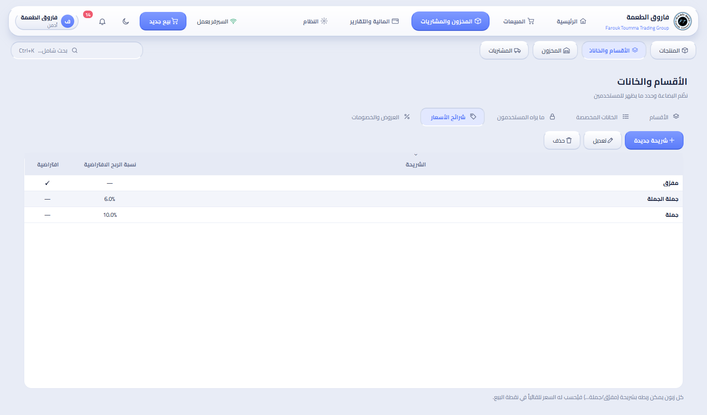
الأزرار: شريحة جديدة / تعديل / حذف. لكل شريحة نسبة ربح على التكلفة تُستخدم عندما لا يكون للمنتج سعر محدد لها. اربط كل زبون بشريحته فيُحسب سعره تلقائياً في نقطة البيع. «مفرّق» هي الشريحة الافتراضية.
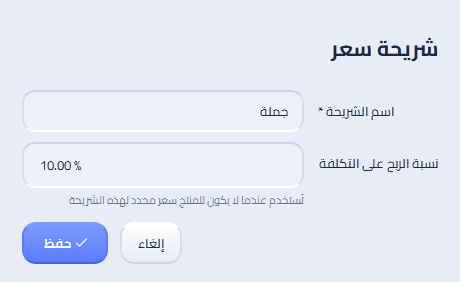
تبويب «العروض والخصومات»
عرض جديد / تعديل / حذف. الجدول يبيّن العرض، على ماذا (منتج أو قسم)، الخصم، من، إلى، والحالة (ساري / قادم / منتهي / معطل).
6.3 المخزون
أعلى الصفحة: نقل بضاعة بين المستودعات وجرد جديد. والصفحة فيها ثمانية تبويبات:
1) الكميات
اختر المستودع (أو كل المستودعات) والفلتر (الكل / منخفض ونافد / نافد فقط). على اليسار قيمة المخزون بالتكلفة والبيع وتصدير. الأعمدة: الكود، المنتج، القسم، الكمية، حد التنبيه، الوحدة، الموقع، الحالة. نقر مزدوج أو الزر الأيمن «تعديل الكمية».
في نافذة تعديل الكمية: المستودع، الكمية الحالية، العملية (إضافة / إخراج / تالف / تعيين كمية مباشرة)، الكمية، تاريخ الصلاحية (عند الإضافة لمنتج يتبع صلاحية)، والسبب. سطر «الكمية بعد العملية» يبيّن النتيجة قبل الحفظ. كل تعديل يُسجل في حركات المخزون.
2) حركات المخزون
كل دخول وخروج للبضاعة: التاريخ، المنتج، الكود، النوع (بيع، شراء، مرتجع، تعديل، تالف، نقل، جرد، إلغاء فاتورة...)، الكمية (+ أخضر / − أحمر)، الرصيد بعدها، المستودع، والبيان. فلترة حسب النوع والفترة ثم عرض.
3) اقتراحات الطلب
يحسب البرنامج معدل البيع اليومي لكل منتج «حسب مبيعات آخر 30 يوم» ويقترح كمية تكفي لـ «30 يوم» (يمكن تغيير الرقمين ثم احسب). الأعمدة: المنتج، المورد، المتوفر، مبيع يومي، ينفد خلال (أحمر إن كان أقل من أسبوع)، الكمية المقترحة، التكلفة التقديرية. تصدير قائمة الطلب لإرسالها للمورد.
4) الصلاحية والدفعات
الدفعات التي تنتهي خلال عدد الأيام المحدد (الافتراضي 60): المنتج، رقم الدفعة، المستودع، الكمية، تاريخ الانتهاء، المتبقي («منتهي» أو عدد الأيام؛ أحمر إن كان أقل من أسبوع). البيع يخصم تلقائياً من الدفعة الأقرب انتهاءً أولاً.
5) الجرد الفعلي
- اضغط جرد جديد (واختر المستودع إن وجد أكثر من واحد).
- في مربع المسح: امسح الباركود أو اكتب الكود ثم Enter — كل مسح يضيف قطعة واحدة للمعدود. (يمكن الجرد من الموبايل أيضاً بنفس الوقت).
- الجدول يعرض: في النظام، المعدود، والفرق (أحمر ناقص، أخضر زائد). نقر مزدوج على سطر لكتابة الكمية المعدودة مباشرة.
- تحت الجدول: عدد المعدود، الناقص، الزائد.
- تطبيق الجرد: بعد التأكيد يعدّل كميات النظام لتطابق المعدود. أو إلغاء الجلسة. وتصدير لنتيجة الجرد.
6) النقل بين المستودعات
في نافذة النقل: اختر من وإلى، ابحث أو امسح المنتج فيسألك عن الكمية (ويعرض المتوفر بالمصدر)، نقر مزدوج لتعديل كمية سطر، ملاحظات، ثم تنفيذ النقل.
7) المستودعات والفروع
مستودع جديد / تعديل / إيقاف. الأعمدة: المستودع، الموقع، افتراضي، عدد الأصناف، قيمة المخزون بالتكلفة. «المستودع الافتراضي» هو الذي يُخصم منه البيع ويُدخل إليه الشراء.
8) البضاعة الراكدة
المنتجات التي لم تُبع منذ مدة (تُحدد في الإعدادات، الافتراضي 60 يوماً): الكمية، آخر بيع، أيام بدون بيع، والقيمة المجمّدة. فكّر بعمل عرض عليها لتحرير رأس المال.
6.4 المشتريات
زر فاتورة شراء أعلى الصفحة. تبويب فواتير الشراء: الرقم، التاريخ، المورد، رقم فاتورة المورد، الأصناف، الإجمالي، المدفوع، المتبقي. نقر مزدوج يعرض أصناف الفاتورة.
- اختر المورد والمستودع واكتب رقم فاتورة المورد.
- ابحث عن المنتج أو امسح باركوده لإضافته (يُقترح سعر التكلفة الحالي).
- في الجدول: الكمية، سعر الشراء، رقم الدفعة، تاريخ الصلاحية (للمنتجات التي تتبع صلاحية)، والإجمالي يُحسب تلقائياً. حذف السطر لحذف المحدد.
- «تحديث سعر التكلفة للمنتجات»: يجعل سعر الشراء الجديد هو التكلفة (ويُعاد حساب سعر البيع لمن ليس سعره ثابتاً).
- المدفوع للمورد (أو دفع كامل) والباقي يُسجل ديناً للمورد. ملاحظات.
- حفظ الفاتورة وإدخال البضاعة: تدخل الكميات للمستودع فوراً.
تبويب الموردون: مورد جديد، تعديل، تسجيل دفعة للمورد (تُخصم مما يُستحق له)، حذف. الأعمدة: المورد، الهاتف، العنوان، المستحق له.
7. قسم «المالية والتقارير»
7.1 المالية والورديات
تبويب «المصاريف»
مصروف جديد، حذف، الفترة من/إلى ثم عرض، تصدير. الأعمدة: التاريخ، التصنيف، البيان، المبلغ، من الصندوق. تحتها الإجمالي.
حقول المصروف: المبلغ، التصنيف (إيجار، كهرباء، رواتب، نقل وشحن، صيانة، ضيافة، متفرقات)، البيان، التاريخ، و«مدفوع من صندوق الوردية الحالية» (إذا كان مفعّلاً يُطرح من المتوقع في الصندوق).
تبويب «الصندوق والورديات»
زر إغلاق ورديتي. الجدول: البائع، وقت الفتح والإغلاق، الافتتاحي، المتوقع، الفعلي، الفرق (أحمر عجز، أخضر زيادة)، الحالة، ملاحظات. البائع العادي يرى ورديّاته فقط.
نافذة الإغلاق تعرض: الرصيد الافتتاحي، مبيعات نقدية، مبيعات آجلة، دفعات الزبائن، المقبوض عبر شام كاش (خارج الصندوق)، المرتجعات النقدية، المصاريف من الصندوق، ثم المتوقع في الصندوق. عُدّ النقود واكتب المبلغ الفعلي المعدود، فيظهر «مطابق ✓» أو «زيادة/عجز» بالمبلغ. اكتب ملاحظة إن لزم ثم إغلاق الوردية.
تبويب «عمولات البائعين»
اختر الفترة ثم احسب: لكل بائع عدد الفواتير، المبيعات، المرتجعات، الصافي، النسبة، والعمولة. نسبة كل بائع تُحدد من صفحة المستخدمين.
تبويب «العملات وأسعار الصرف»
عملة جديدة، تعديل سعر الصرف (للعملة المحددة)، حذف، وعملة العرض الافتراضية (العملة التي تظهر بها الأرقام في لوحة التحكم والتقارير ونقطة البيع). تحديد عملة يعرض رسم تاريخ سعر الصرف.
7.2 التقارير
أعلى الصفحة: الفترة الجاهزة (هذا الشهر، الشهر الماضي، آخر 30 يوم، آخر 7 أيام، اليوم، هذه السنة، فترة مخصصة تفعّل حقلي من/إلى)، ثم عرض، وPDF لحفظ تقرير مطبوع بالشعار (الملخص + نسبة مبيع المنتجات + الأقسام).
الملخص: صافي المبيعات، الربح الإجمالي، المصاريف، صافي الربح، الفواتير، المرتجعات، متوسط الفاتورة، مبيعات آجلة، ورسم أعمدة للمبيعات والربح.
نسبة المبيع لكل منتج: الترتيب، المنتج، الكمية المباعة، المبيعات، نسبة المبيع (حصته من الإجمالي)، الربح، هامش الربح (أخضر فوق 20%، أحمر إن كان خسارة). مع تصدير.
أوقات الذروة: جدول أيام الأسبوع × ساعات اليوم؛ اللون الأغمق = مبيعات أكثر. مفيد لترتيب دوام البائعين.
سجل النشاطات (للأدمن فقط): كل عملية في النظام — الوقت، المستخدم، العملية (دخول، بيع، تعديل سعر، حذف، نسخ احتياطي...)، المصدر (كمبيوتر/موبايل)، والتفاصيل. لا يمكن تعديله.
8. قسم «النظام»
8.1 المستخدمون
أعلى الصفحة: تغيير كلمة سري ومستخدم جديد. تبويب الحسابات: اسم المستخدم، الاسم، الدور، العمولة، آخر دخول، الحالة (فعّال/موقوف). نقر مزدوج أو الزر الأيمن: تعديل / حذف.
- اسم المستخدم (لا يتغير بعد الإنشاء)، الاسم الكامل، الهاتف، الدور.
- كلمة السر مع شريط القوة (عند التعديل: اتركها فارغة لعدم التغيير).
- نسبة العمولة للبائع، و«الحساب فعّال» (إلغاؤه يمنع الدخول دون حذف الحساب).
- الصلاحيات: تُضبط تلقائياً حسب الدور، ويمكنك إضافة أو إزالة أي صلاحية لهذا المستخدم. الصلاحية المعلّمة ⚠ حساسة ولا تُمنح تلقائياً.
تبويب الأجهزة المتصلة: كل موبايل سجّل دخولاً (المستخدم، اسم الجهاز، العنوان، تاريخ الدخول، آخر نشاط). فصل الجهاز المحدد يجبره على تسجيل الدخول من جديد — استخدمه عند ضياع موبايل أو ترك موظف للعمل.
8.2 الإعدادات
كل الإعدادات في صفحة واحدة مقسومة لبطاقات. لا تنسَ الضغط على حفظ الإعدادات أعلى الصفحة بعد أي تغيير.
| البطاقة | ما فيها |
|---|---|
| بيانات المنشأة | الاسم، الاسم بالإنكليزية، العنوان، الهاتف، البريد، الرقم الضريبي، عبارة أسفل الفاتورة، تفاصيل إضافية (كل سطر يظهر تحت اسم المحل)، صفحة الفيسبوك (تُطبع كرمز QR)، حساب شام كاش، والشعار: تغيير / الشعار الأصلي. |
| المخزون والمبيعات | حد التنبيه الافتراضي، البضاعة راكدة بعد (يوم)، تنبيه الصلاحية قبل (يوم)، تنبيه الفاتورة الكبيرة من (مبلغ)، نسبة الضريبة، السماح بالبيع رغم نقص الكمية (غير منصوح)، فاصل أجزاء الكود (- أو _ أو . أو بدون)، خانات الرقم التسلسلي في الكود. |
| الطباعة والواجهة | ورق الفاتورة الافتراضي (A4، A5، إيصال 80mm أو 58mm)، إظهار الشعار على الفاتورة، اللغة (العربية/English — بعد إعادة الدخول)، المظهر (فاتح/داكن)، قفل الشاشة بعد خمول (بالدقائق، 0 = بدون قفل). |
| سيرفر تطبيق الموبايل | تشغيل السيرفر تلقائياً، المنفذ (8765)، السماح بالاتصال من الشبكة المحلية فقط (موصى به)، وزر ربط موبايل (QR). |
| الذكاء الاصطناعي | تفعيل الميزات، مفتاح API (يُحفظ مشفّراً)، الموديل، واختبار الاتصال. |
| النسخ الاحتياطي | نسخ تلقائي يومي، الاحتفاظ بآخر (عدد النسخ)، تشفير النسخ بكلمة سر، نسخة سحابية في (مجلد Google Drive على الكمبيوتر) مع اختيار، ثم نسخ احتياطي الآن، استرجاع نسخة (اختر من القائمة أو من ملف)، فتح المجلد، وقائمة بآخر النسخ (🔒 = مشفّرة). |
| التحديثات والأمان | رابط التحديثات، فحص التحديثات يومياً، فحص الآن، توليد مفتاح استرجاع جديد (يلغي القديم ويُنسخ الجديد)، رقم الإصدار، ومسار مجلد البيانات. |
8.3 ربط الموبايل (رمز QR)
تفتح من «السيرفر يعمل» في الشريط العلوي أو من الإعدادات. على اليمين رمز QR يمسحه الموبايل، وتحته عنوان الكمبيوتر (مثل 192.168.1.10:8765) لإدخاله يدوياً، وزر إيقاف السيرفر / تشغيل السيرفر. على اليسار الأجهزة المتصلة مع تحديث وفصل الجهاز المحدد.
9. تطبيق الموبايل (أندرويد)
9.1 التنصيب والاتصال
- انقل ملف FaroukToumma.apk للموبايل وافتحه، واسمح بـ«تثبيت التطبيقات من هذا المصدر» إذا طُلب.
- وصّل الموبايل على نفس شبكة الواي فاي الموصول عليها كمبيوتر الأدمن، وتأكد أن برنامج الأدمن مفتوح والسيرفر يعمل.
- افتح التطبيق: شاشة تسجيل الدخول تبحث عن الكمبيوتر تلقائياً («جارِ البحث عن السيرفر في الشبكة...»).
- اكتب اسم المستخدم وكلمة السر (نفسها التي أنشأها الأدمن في الكمبيوتر) واضغط دخول.
- إذا لم يجد الكمبيوتر، اضغط «اتصال يدوي بالسيرفر» أسفل الشاشة.
شاشة «الاتصال بالسيرفر» (الاتصال اليدوي)
- مسح رمز QR من الكمبيوتر: يفتح الكاميرا؛ وجّهها نحو رمز QR في نافذة ربط الموبايل على الكمبيوتر.
- بحث تلقائي في الشبكة: يعرض أجهزة الكمبيوتر الموجودة لتختار منها.
- أدخل العنوان يدوياً: مثل 192.168.1.10:8765 ثم اتصال.
بعد الاتصال يظهر أسفل شاشة الدخول «متصل بـ ... — تغيير».
9.2 الشكل العام
نفس تقسيم برنامج الكمبيوتر:
- الشريط العلوي: الشعار، «مجموعة الطعمة التجارية» واسم الصفحة الحالية، الجرس مع عدد الإشعارات غير المقروءة، زر الوضع الليلي، ودائرة المستخدم (اسمك ودورك وتسجيل الخروج).
- صف الأقسام: الرئيسية، المبيعات، المخزون، النظام (تظهر فقط الأقسام المسموحة لك). على «المبيعات» رقم بعدد أصناف السلة.
- صف صفحات القسم تحته.
- عند انقطاع الاتصال يظهر شريط «بدون اتصال» مع عدد العمليات المنتظرة وزر إعادة المحاولة.
9.3 الشاشات
الرئيسية ← لوحة التحكم
أزرار الفترة (اليوم، 7 أيام، الشهر، السنة)، بطاقات: صافي المبيعات، الفواتير، صافي الربح، متوسط الفاتورة، قيمة المخزون، مبيعات آجلة. ثم رسم «المبيعات»، «التنبيهات الهامة» مع زر الكل، و«الأكثر مبيعاً» بأشرطة نسبة. اسحب للأسفل للتحديث.
الرئيسية ← الإشعارات
قائمة التنبيهات (غير المقروء بخط عريض). الضغط على تنبيه منتج يفتح تفاصيله. زر عائم تحديد الكل كمقروء.
المبيعات ← نقطة البيع
- مربع «كود المنتج ثم إدخال» وزر مسح: يفتح الكاميرا بوضع متواصل — امسح المنتجات واحداً تلو الآخر دون إغلاق الكاميرا، وتظهر رسالة «✓ اسم المنتج» بعد كل مسح.
- بطاقات السلة: الاسم والسعر (اضغط السعر لتعديله إن كانت لك صلاحية الخصم)، أزرار − و+، اضغط على الكمية لكتابتها، والإجمالي. اسحب البطاقة جانباً لحذفها.
- لوحة الدفع: زر الزبون («زبون نقدي» أو اسم الزبون؛ يفتح قائمة بحث مع زر إضافة زبون جديد ويُظهر دين كل زبون)، زر خصم على الفاتورة، زر العملة (اختيار الدولار/الليرة مع سعر الصرف)، وزر ✏ تعديل سعر الصرف (للأدمن).
- طريقة الدفع: نقدي / شام كاش / آجل / دفع جزئي. في الجزئي اضغط «المدفوع: ... — اضغط للتعديل». في شام كاش حقل لرقم العملية.
- الإجمالي بخط كبير وسعر الصرف تحته، ثم زر عرض سعر وزر إتمام البيع.
- البيع الآجل يحتاج اختيار زبون. إذا انقطع الاتصال تُحفظ الفاتورة على الموبايل وتُرسل تلقائياً عند عودته.
المبيعات ← الفواتير وصفحة الفاتورة
أزرار: مبيعات / مرتجعات / عروض أسعار. كل بطاقة: الرقم، الزبون، التاريخ، الإجمالي، والمتبقي أو «ملغاة» بالأحمر. فتح فاتورة يعرض: الرقم والتاريخ والزبون والبائع وطريقة الدفع، الأصناف، المجموع والخصم والضريبة والإجمالي والمدفوع والمتبقي، والملاحظات. الأزرار: مشاركة PDF (واتساب) بحجم A4، إيصال 80mm، وتحويل إلى فاتورة بيع لعرض السعر المفتوح.
المبيعات ← الزبائن
بحث بالاسم أو الهاتف، مرشّح أصحاب الديون فقط وإجمالي الديون. لكل زبون: زر 💵 استلام دفعة (يعرض الرصيد المستحق، المبلغ، ملاحظات) وزر 🛒 بيع لهذا الزبون (ينقلك لنقطة البيع والزبون مختار). زر عائم زبون لإضافة زبون.
المخزون ← المنتجات (البحث)
«أهلاً اسمك 👋»، مربع كود المنتج أو اسمه (نتائج أثناء الكتابة بالصورة والكود والسعر) وزر المسح بالكاميرا. تحتها عمليات البحث الأخيرة. فتح منتج يعرض: الصور، الاسم والكود وحالة المخزون، السعر بخط كبير (والسعر قبل العرض إن وجد)، الكمية المتوفرة، التفاصيل والخانات المسموحة، المتغيرات المتوفرة، وأزرار إضافة إلى سلة البيع وتعديل الكمية (حسب الصلاحية).
المستخدم «بحث فقط» يرى هنا فقط ما سمح به الأدمن في «ما يراه المستخدمون».
المخزون ← الجرد
إذا لم تكن هناك جلسة: زر بدء جرد جديد. ثم: اختيار الجلسة، مفتاح «اسأل عن الكمية عند كل مسح» (عند إيقافه كل مسح = قطعة)، وزر ابدأ المسح (كاميرا متواصلة). القائمة تعرض المعدود والفرق لكل منتج. تطبيق الجرد يتم من الكمبيوتر بعد المراجعة.
النظام ← المستخدمون / بيانات الفاتورة / الإعدادات
- المستخدمون (للأدمن): قائمة بمفتاح تفعيل/إيقاف لكل مستخدم، وزر مستخدم لإضافة مستخدم (اسم المستخدم، الاسم، كلمة السر، الدور).
- بيانات الفاتورة: نفس بيانات المنشأة في إعدادات الكمبيوتر (الاسم، العنوان، الهاتف، العبارة، التفاصيل الإضافية، الفيسبوك، شام كاش) وزر حفظ. الشعار يُغيَّر من الكمبيوتر فقط.
- الإعدادات: اسمك ودورك؛ بطاقة المزامنة والعمل بدون اتصال (عدد المنتجات المحفوظة على الجهاز، آخر مزامنة، العمليات المنتظرة مع إمكانية حذف عملية مرفوضة، وزر مزامنة الآن)؛ عملة عرض الأسعار؛ الوضع الليلي؛ عنوان السيرفر وحالة الاتصال؛ تسجيل الخروج؛ وإلغاء ربط الجهاز (يحذف البيانات المحلية).
شاشة الكاميرا (مسح الباركود)
إطار أبيض في الوسط لوضع الباركود داخله، زر ⚡ الفلاش وزر تبديل الكاميرا في الأعلى. في الوضع المتواصل تُتجاهل قراءة نفس الرمز مرتين خلال ثانيتين.
10. سيناريوهات العمل اليومية خطوة بخطوة
10.1 تجهيز البرنامج في أول يوم
- أكمل معالج الإعداد واحفظ مفتاح الاسترجاع.
- الإعدادات: راجع بيانات المنشأة والشعار وعبارة الفاتورة، وحد التنبيه الافتراضي، ونوع ورق الطابعة. اضغط حفظ.
- الأقسام والخانات: أنشئ أقسامك ورموزها ونسب الربح، والخانات التي تحتاجها، وشرائح الأسعار.
- أدخل البضاعة: يدوياً (منتج جديد ← حفظ وإضافة آخر) أو دفعة واحدة من Excel.
- اطبع ملصقات باركود للمنتجات التي ليس عليها باركود.
- المستخدمون: أنشئ حساباً لكل بائع بدوره ونسبة عمولته.
- اربط موبايلات الموظفين بمسح رمز QR.
- الإعدادات ← النسخ الاحتياطي: فعّل النسخ اليومي واختر مجلد Google Drive.
10.2 يوم بيع عادي
- F2 ← فتح وردية واكتب المبلغ الموجود في الدرج.
- امسح المنتجات بالقارئ، اختر الزبون إن لزم، اختر طريقة الدفع، واكتب المبلغ المستلم لمعرفة الباقي.
- F9 ← في المعاينة: طباعة أو واتساب.
- نهاية اليوم: إغلاق الوردية، عُدّ النقود واكتب المبلغ الفعلي.
10.3 بيع بالدين واستلام الدفعات
- في نقطة البيع اختر الزبون ثم «آجل» أو «دفع جزئي».
- عندما يدفع: الزبائن ← اختر الزبون ← تسجيل دفعة (نقدي أو شام كاش).
- لإرسال كشف حساب: تصدير الكشف وأرسل الملف.
- حدد «حد الدين» لكل زبون ليظهر تنبيه عند تجاوزه.
10.4 استلام بضاعة من مورد
- المشتريات ← فاتورة شراء ← اختر المورد والمستودع.
- امسح المنتجات واكتب الكميات وأسعار الشراء (أو «قراءة فاتورة من صورة»).
- اكتب المدفوع ثم حفظ الفاتورة وإدخال البضاعة.
- عند الدفع لاحقاً: الموردون ← تسجيل دفعة للمورد.
10.5 تغيّر سعر الصرف
المالية ← العملات وأسعار الصرف ← حدد الليرة ← تعديل سعر الصرف (أو زر ✏ في نقطة البيع). الأسعار بالليرة تتغير فوراً لأن الأسعار الأصلية محفوظة بالدولار.
10.6 تغيّر سعر المورد لقسم كامل
المنتجات ← المزيد ← تحديث الأسعار الجماعي ← النطاق «قسم» أو «مورد» ← النسبة ← معاينة ← تطبيق.
10.7 الجرد الشهري
- المخزون ← جرد جديد.
- وزّع الموظفين: كل واحد يفتح «الجرد» في الموبايل ويمسح رفوفه (أو من الكمبيوتر).
- راجع تبويب «الجرد الفعلي»: الناقص بالأحمر والزائد بالأخضر، وصحّح ما يلزم بنقر مزدوج.
- تطبيق الجرد وتصدير النتيجة للأرشيف.
10.8 زبون أرجع بضاعة
الفواتير ← ابحث عن الفاتورة ← زر أيمن ← مرتجع ← الكمية المرتجعة ← نقداً أو خصم من الدين ← تنفيذ المرتجع.
10.9 موظف ترك العمل أو ضاع موبايل
المستخدمون ← عدّل حسابه وألغِ «الحساب فعّال»، ثم تبويب الأجهزة المتصلة ← فصل الجهاز المحدد.
11. الأسئلة الشائعة وحل المشاكل
| المشكلة | الحل |
|---|---|
| الموبايل لا يتصل | تأكد أن الموبايل والكمبيوتر على نفس الواي فاي، وأن «السيرفر يعمل» بالأخضر، واسمح للبرنامج في جدار حماية ويندوز (Private networks). جرّب الاتصال اليدوي بالعنوان الظاهر في نافذة الربط. |
| تغيّر عنوان الكمبيوتر | الموبايل يبحث من جديد تلقائياً عند الدخول. إن لم يجده استخدم «اتصال يدوي بالسيرفر» وامسح رمز QR. |
| نسيت كلمة سر الأدمن | «نسيت كلمة السر؟» في شاشة الدخول وأدخل مفتاح الاسترجاع. |
| نسي بائع كلمة سره | الأدمن: المستخدمون ← تعديل ← كلمة سر جديدة ← حفظ. |
| لا يمكن بيع منتج | قد يكون «موقوفاً» (فعّل «فعّال» في نافذته) أو كميته غير كافية (البرنامج يمنع البيع بأكثر من المتوفر إلا بصلاحية خاصة أو إعداد). |
| البائع لا يرى زراً موجوداً في الدليل | هذه صلاحية غير ممنوحة له؛ الأدمن يفعّلها من نافذة المستخدم. |
| السعر لا يتغير عند تعديل التكلفة | المنتج عليه «سعر ثابت». ألغِ الخيار من تبويب التسعير. |
| رسالة «البرنامج مفتوح مسبقاً» | هناك نافذة مفتوحة؛ أغلقها أو أعد تشغيل الكمبيوتر. |
| ميزات الذكاء الاصطناعي لا تعمل | تحتاج اتصال إنترنت ومفتاح Gemini صحيح: الإعدادات ← اختبار الاتصال. |
| واتساب لا يرفق الفاتورة | واتساب لا يسمح بالإرفاق التلقائي؛ اسحب ملف PDF من المجلد الذي فُتح إلى المحادثة. من الموبايل استخدم «مشاركة PDF». |
| أين بياناتي؟ | في مجلد البيانات المكتوب أسفل الإعدادات (عادة %APPDATA%\FaroukToumma) وفيه قاعدة البيانات والصور والفواتير والنسخ الاحتياطية. |
| نقل البرنامج لكمبيوتر جديد | اعمل «نسخ احتياطي الآن»، ثبّت البرنامج على الجهاز الجديد، ثم «استرجاع نسخة» واختر الملف. |
12. ملاحق
أ) الصلاحيات
| الصلاحية | أدمن | مدير | بائع | بحث فقط |
|---|---|---|---|---|
| عرض لوحة التحكم | ✓ | ✓ | — | — |
| عرض المنتجات | ✓ | ✓ | ✓ | ✓ |
| إضافة وتعديل المنتجات | ✓ | ✓ | — | — |
| حذف المنتجات | ✓ | ✓ | — | — |
| رؤية سعر التكلفة والأرباح | ✓ | ✓ | — | — |
| إدارة الأقسام والخانات | ✓ | ✓ | — | — |
| عرض المخزون | ✓ | ✓ | ✓ | — |
| تعديل المخزون والجرد والنقل | ✓ | ✓ | — | — |
| المشتريات والموردين | ✓ | ✓ | — | — |
| البيع وإصدار الفواتير | ✓ | ✓ | ✓ | — |
| منح خصومات | ✓ | ✓ | ✓ | — |
| المرتجعات | ✓ | ✓ | — | — |
| إلغاء الفواتير | ✓ | ✓ | — | — |
| رؤية فواتير كل البائعين | ✓ | ✓ | — | — |
| البيع بأكثر من الكمية المتوفرة ⚠ | يدوياً | يدوياً | يدوياً | — |
| إدارة الزبائن والديون | ✓ | ✓ | ✓ | — |
| المصاريف | ✓ | ✓ | — | — |
| إدارة الورديات والصندوق | ✓ | ✓ | ✓ | — |
| التقارير | ✓ | ✓ | — | — |
| إدارة المستخدمين | ✓ | — | — | — |
| الإعدادات والنسخ الاحتياطي | ✓ | — | — | — |
| استخدام الذكاء الاصطناعي | ✓ | ✓ | — | — |
هذه القيم الافتراضية لكل دور، ويمكن تغييرها لكل مستخدم.
ب) أنواع الإشعارات
| النوع | متى يظهر |
|---|---|
| مخزون منخفض | الكمية وصلت لحد التنبيه أو أقل. |
| نفد من المخزون | الكمية صفر. |
| قرب انتهاء الصلاحية | دفعة تنتهي خلال المدة المحددة في الإعدادات. |
| منتهي الصلاحية | دفعة انتهى تاريخها وما زالت في المخزون. |
| دين متجاوز للحد | دين الزبون تجاوز «حد الدين». |
| فاتورة كبيرة | فاتورة أكبر من المبلغ المحدد في الإعدادات. |
| النظام / تحديث متوفر | رسائل البرنامج وتوفر إصدار جديد. |
ج) أنواع حركات المخزون
إدخال • إخراج • بيع • مرتجع • تعديل • تالف • شراء • نقل وارد • نقل صادر • جرد • إلغاء فاتورة.
د) طرق الدفع وحالات الفواتير
طرق الدفع: نقدي • شام كاش • آجل • دفع جزئي. الحالات: مكتملة • ملغاة • محوّل لفاتورة • مفتوح (لعروض الأسعار).